生成时间：2026-11-24T17:27:57+08:00
今日保留论文数：18
内容构成：今日新文 18 篇；补充推荐 0 篇；经典旧文精读 0 篇
阅读分层：重点精读 7 篇；相关简报 11 篇。精读依据科学贡献筛选，简报保留方法、结论及局限。
数据源警告
- 本次有 1 个数据源访问异常；完整错误已保留在运行日志中，日报只显示摘要。
- 其他来源：1 个异常。
- 主要错误类型：其他 1 次。
高能天体物理重点
1. Making Reconnection Cooler: A relativistic resistive magnetohydrodynamics model for radiative collisionless reconnection
- 来源：arXiv / astro-ph.HE
- 链接：https://arxiv.org/abs/2611.28035
- 作者：Alicia M. Savelli, Daniel Groselj, Bart Ripperda, Amir Levinson, Alexander Philippov, Norman Murray
- 公告 / 来源日期：2026-11-24
- 阅读层级：重点精读
- 评分：novelty 8/10，importance 8/10，relevance 9/10，final 9.35/10
- 推荐理由：从动理学推导RRMHD辐射能动量损失并配合电荷饥饿电阻率，在不同逆康普顿冷却区间与PIC逐一对标温度和出流能量分布，具体推进动理学到整体高能辐射模拟的桥接；全文需核对闭合假设、二维限制和是否仅验证宏观量而未验证非热粒子谱。
中文题目：把逆康普顿冷却带入相对论电阻磁流体：与动理学重联逐项对标
做了什么：高能天体的磁重联把磁能转成粒子热运动和等离子体整体出流，二者都能把软光子散射到更高能量。逐粒子模拟能描述这些过程，却难覆盖整个吸积流；普通磁流体模拟可覆盖大尺度，但其重联速度和辐射损失未必正确。本文从粒子受到的逆康普顿阻力出发，对局域热分布平均并变换参考系，得到同时扣除流体能量和动量的冷却项，再配合只在缺少载流粒子的扩散区增强的有效电阻率。
作者在相同的二维电子—正电子电流片设置中，比较电阻相对论磁流体（RRMHD）与粒子网格（PIC）模拟。上游磁化参数为15，导引磁场为反向磁场的0.5倍，跨强、适中、弱和无冷却四档检验。稳态重联率约0.08、热分布峰和整体运动能谱均接近PIC；强冷却时粒子能谱差距缩小。成功的是宏观动力学与热能损失的闭合，并非自洽生成非热高能粒子尾部，也尚未完成真实黑洞环境的辐射输运。
为什么重要：一个冷却处方是否可靠，不能只看温度降下来没有：错误的重联率会改变电流片长宽比、磁力线张力和磁岛运动，进而改变整体康普顿化。本文把“如何释放磁能”和“如何让辐射带走能动量”一起校准，并用均匀电阻率对照说明二者不可随意拆开。这使大尺度流体模拟在本文所检验的光学薄、各向同性外部光场条件下，获得有动理学依据的辐射重联宏观闭合。
理论 / 观测 / 仪器方法价值：可复用的核心是用同一个电场—辐射阻力平衡尺度标记PIC和流体的冷却强度，而不是分别调温度或凭光变拟合冷却系数。热分布近似把粒子洛伦兹因子二阶矩映射为温度平方，电荷饥饿电阻率再引入有效趋肤深度，使两套算法具有可比的扩散区与冷却时间。应用时仍须解析该有效尺度，并核对光场参考系、电子温度与离子加热分配，不能只复制一个能量损失项。
为什么应该关注：对黑洞冕与喷流高能辐射研究，这项工作为“吸积流形成电流片—磁岛加速—软光子康普顿化”提供更可控的中间环节，尤其适合考察盘冕供能与辐射反馈如何相互影响。对IACT能段的直接预测则还欠非热粒子演化、Klein–Nishina散射及光子输运；本文没有产生可与TeV光谱直接比较的观测模板。下一步真正值得跟踪的是闭合在三维湍流、自生电流片及变化的各向异性光场中能否仍保持对标精度。
展开详细解读：文章讲解、背景、理论、重点章节、图表与相关工作
文章详细讲解
科学问题是怎样在不逐个跟踪粒子的条件下，保留辐射重联最影响整体系统的物理。单个高能电子被逆康普顿散射减速，许多有共同速度的电子还会整体受到光子阻力；只减内能会漏掉后者，进而高估高速磁岛输运磁能和上散射光子的能力。作者把温度与流体速度都放进能动量汇项，试图在可承受的大尺度计算中保留这两条损失通道。
方法上先在电子分布各向同性的流体静止系计算辐射四力，再变换回光场各向同性的实验室系。平均时采用相对论热电子分布，其二阶矩由温度决定，因此流体状态足以计算损失。与此同时，扩散区电流达到可用正负载流子所能供应的量级时，局域有效电阻增大，允许非理想电场形成；这一处方继承既有无辐射重联工作的PIC标定，不把数值网格耗散当成真实微观电阻。
关键结果不是所有输出都完全相同，而是匹配程度具有明确结构。图2的稳态重联率和最快出流速度在四种冷却强度下近似一致；图3的整体运动能谱峰及斜率也吻合。粒子动能谱方面，RRMHD只能把各网格的温度和整体速度组合成漂移热分布，PIC却出现非热尾部；冷却越强，这条尾部越受压制，双方才越接近。因此强冷却促进谱形一致，并不意味着流体理论学会了非热加速。
适用边界由模拟而非天体名称定义：二维、成对等离子体、固定导引场、平直时空和不随等离子体演化的外部各向同性光浴。作者没有计算光子被散射后的再反馈、对产生或真实观测光谱。光学厚冕、离子主导的吸积流或同步辐射主导的脉冲星电流片需要扩展方程及重新校准，不能因它们也发生重联就沿用现有结果。
关键结果是怎么做出来的
第一步先保证两种数值实验在同一物理尺度上比较。初态均为Harris反向电流片，反向场沿片方向变化，垂直于平面的导引场固定为上游反向场的一半；上游温度为电子静能的0.01，片内过密度为上游的3倍。电流片半长约为3000个有效趋肤深度，每个趋肤深度约5个网格。这样的设置把冷却以外的差别尽量缩小，磁压也能支撑冷却后的磁岛。
第二步控制瞬态和边界。中心扰动触发重联，运行一个光行时后才开启辐射；出流边界也由周期转为吸收，避免初期搭建过程直接主导稳态结论。RRMHD使用BHAC的自适应网格，PIC使用TRISTAN-MP v2；温度/整体运动谱在约3.5至10个光行时之间平均。附录B检查强冷却下扩散区仍由多个有效趋肤深度尺度上的网格解析，减少“冷得太薄而被网格抹平”的疑虑，但这不同于完整的多分辨率收敛序列。
第三步把流入、流出分开检查。重联率按平均垂直流入速度除以最快平行出流速度定义，得到约0.08；导引场使它略低于常引用的无导引场0.1。图2下半部的最大出流四速度接近含导引场修正的阿尔芬值。图1虽可见强冷却压低部分磁岛的温度及整体速度，但最快出流仍受磁张力尺度控制，不能把局部减速与最大出流无明显变化误认为互相矛盾。
第四步比较谱而不只比较平均值。PIC直接从粒子计算动能，RRMHD则为每个网格构造带整体漂移的Maxwell–Jüttner热分布，以密度和网格体积加权后合并。弱/无冷却时用温度阈值选取电流片，强/适中冷却时另用出流四速度阈值纳入已变冷的物质，避免把真正辐射最强的区域筛掉。图3的热峰和整体运动谱一致，支持能动量闭合；其非热尾部差异则直接标出闭合没有包含的自由度。
最后用均匀电阻率做机制对照。附录D中关闭冷却以隔离电阻处方的影响：均匀电阻率的重联率约0.02，显著慢于电荷饥饿处方的0.08；最大速度仍受阿尔芬尺度限制，但整体速度谱的峰变弱、典型能量更低。这表明即使换上正确的辐射汇项，若供能和出流本身由错误的耗散方式控制，也无法复现动理学统计；论文贡献是两种闭合的配合，而不是冷却项单独包办全部结果。
展开背景、理论、公式、模型和章节导读
背景知识
磁场反向交汇的薄层称为电流片。理想磁流体近似下，磁力线随流体运动，拓扑不会任意改变；在很薄的非理想区域中，这个约束失效，磁场可以重接，随后磁张力把物质沿电流片两端抛出。片内还会形成封闭磁结构，即磁岛或等离子体团。它们的速度、密度和寿命关系到耀发时间结构，而不只是电流片的静态形状。
“相对论重联”不单指场所在天体离黑洞很近，而是单位质量所携带的可用磁能足够大，粒子和整体出流都可能达到相对论速度。磁化参数用上游磁能密度相对于静质量能密度衡量这一点。本文选择15，使磁场可以显著加速等离子体，但又固定导引场比例；因此并不是对整个磁化和磁几何参数空间的普查。
在黑洞冕中，盘的软光子与高温电子发生逆康普顿散射可形成硬X射线。热运动贡献通常最容易想到，但具有共同高速运动的磁岛也能把能量传给光子，即整体康普顿化。后者要求同时减少流体动量，否则计算会让同一团物质持续以过高速度散射，形成不自洽的能量供给。本文研究的辐射阻力正是把这部分能量账与动量账一起写入流体方程。
PIC能追踪粒子分布并自洽求电磁场，天然适合无碰撞扩散区；它的代价是必须解析微观长度与时间。磁流体只保留密度、温度和速度等少量矩，能跨越更大尺度，却丢失分布的形状。所谓亚网格模型因此不是恢复所有微观细节，而是把特定条件下对大尺度最重要的平均作用写成闭合。判断成功应问哪些矩和统计被复现，不能把热峰吻合等同于所有粒子辐射都已预测。
基础理论 / 方法脉络
先区分两个洛伦兹因子：小写表示单个粒子的运动，包含随机热运动；大写表示流体整体运动。即使整体速度很小，热电子仍会强烈散射光子；即使温度很低，快速整体运动也能受到康普顿阻力。本文从单粒子阻力到流体四力的平均，正是把这两种运动拆开再一致地合并，而不是用整体速度替代每个粒子的速度。
实验室系中各向同性的光子浴，在运动流体的静止系中一般不再各向同性。因而需要先对粒子分布作平均，并对辐射应力张量作洛伦兹变换，再把能量和动量汇变回实验室系。附录A给出这一过程；其热矩闭合使用相对论温度近似，且拖曳采用Thomson极限。对极高能电子，散射进入Klein–Nishina区后截面和能量转移都改变，不能只提高现有冷却参数解决。
扩散区的另一核心是电流。若薄层要求的电流已经接近两种电荷以接近光速反向运动所能提供的值，就不能继续用理想冻结磁场的近似。电荷饥饿处方把这个条件转成局域有效电阻，使重联电场及扩散区长宽比靠近PIC。有效趋肤深度既决定需要多少数值网格，也把流体模型中的长度与粒子冷却长度连接起来；它不是任意可忽略的数值参数。
冷却强弱必须与所问的过程绑定。粒子在短扩散区中加速的时间，与磁岛沿整个片长传播的时间相差很大；冷却可能来不及压住初始加速，却能在出流离开系统之前抽走大量能量。这就是本文“适中冷却”的含义，对冕尤其重要。由此不能把“重联率几乎不变”理解为“辐射反馈弱”：重联磁拓扑改变仍快，流体温度与出流能量分配却可以显著改变。
导引场提供不参与反向重接的磁分量，一方面给冷却磁岛额外磁压支撑，另一方面降低可用于加速出流的有效磁化。因此理论对照应使用包含导引场的阿尔芬速度，不能直接把所有出流峰与无导引场的根号磁化参数比较。这一修正也解释了为什么本文0.08重联率并非对通常0.1量级的反例。
公式与推导
以下按论文式(1)–(13)及图2的理论对照组织推导，磁场采用文中的高斯单位；最后一个冷却分类式由文中时间尺度直接整理。首先用上游反向磁场、密度和电子趋肤深度确定可用磁能及扩散区半厚度：
其中\(\sigma_0\)无量纲，\(\lambda_e\)与\(\Delta\)为长度；这个联系使流体模型的空间分辨率具有动理学意义。
在各向同性外部光场及Thomson近似下，单电子受到逆康普顿阻力，论文式(1)为
这里\(u_{\rm rad}\)是辐射能量密度，\(\boldsymbol\beta=\mathbf v/c\)，截面乘能量密度具有力的量纲。负号保证它沿运动反向，故不仅损失能量，也损失动量。
令重联电场的加速力与极相对论电子阻力平衡，定义冷却强度参数：
在其余条件相同的情况下，更小的\(\gamma_{\rm rad}\)表示更强光场、更多冷却；它是用于比较算法的参数，不能误认为全部粒子恰好都达到的能量。
接着对流体静止系的相对论热分布平均，温度以电子静能为单位，得到本文映射：
撇号表示流体静止系；这是热分布在相对论温度区间的矩关系，不适用于任意非热尾部。对成对等离子体，文中取\(\rho_e=\rho/2\)，两种模拟于是可用同一冷却档位对比。
把粒子四力平均并变换参考系后，式(9)给实验室系能量汇：
\(\Gamma\)和\(\beta_\Gamma\)是整体运动量；括号中第一项即使冷流体也存在，其余项含热运动及参考系混合。零整体速度时保留热损失，说明它没有把热康普顿化遗漏。
同一个推导还给式(10)的动量汇，不能独立随意删去：
两者进入\(\nabla_\nu T^{\mu\nu}=S^\mu/c\)，并与无质量产生的连续性方程联立。这里没有跟踪散射后的光子场，辐射只是外部能动量汇；若要实现光子回馈必须增加辐射演化。
为了让冷却遇到正确的重联供能，扩散区还使用电荷供应上限估计：
因子2来自相反电荷反向载流。这个局域有效电阻与均匀电阻的物理含义不同，关键在它允许形成PIC量级的非理想电场及快速重联。
最后用阻力计算冷却时间，和两个穿越时间比较：
扩散区内典型\(\gamma\sim\sigma_0\)，因此\(t_{\rm IC}/t_D\sim\gamma_{\rm rad}^2/\sigma_0^2\)；若先离开扩散区才冷却，而仍来得及在全片传播过程中冷却，就是\(t_D\ll t_{\rm IC}\ll t_{\rm adv}\)的适中档。整片尺度比较另采用较低的粒子能量估计，不能把不同位置的同一个符号当成数值完全相同的时间。
对出流的独立预测还需包含导引场：
这是图2最快出流的比较基准。匹配它检验宏观磁张力动力学，匹配图3热峰检验温度闭合，两种检验合起来才构成本文的验证链。
模型拟合 / 应用方法
本文没有对天文观测做参数拟合，实际流程是同设置数值基准测试。输入包括磁化参数15、导引场比例0.5、上游温度0.01、系统半长约3000个有效趋肤深度及冷却控制量。作者选无冷却、60、32和15四个粒子辐射平衡洛伦兹因子代表主要比较，同时表1还列较密的强/适中冷却档位；读者应先从这些固定输入理解图中差别，而不是给它们附加观测置信区间。
跨代码可比性来自匹配物理尺度，而非使用相同网格编号。RRMHD的自适应网格最高有效分辨率为32768平方，PIC网格约30720乘30000，二者均约每趋肤深度5格。辐射开启时间、进入稳态后的采样窗也作相似处理。不过为防止上游无关冷却，PIC设粒子洛伦兹因子大于1.1、流体设整体因子大于1.02才作用冷却；这两种阈值并非数学等价，属于当前实现需要记住的算法边界。
比较能谱时，必须区分热重建谱和真实粒子谱。流体的每个网格只知道温度和整体速度，所以用漂移Maxwell–Jüttner分布重建，再按密度/网格体积求和；这种构造先验上已经没有自洽的加速尾部。PIC高能尾部随冷却变陡是物理结果，两谱逐渐接近支持强冷却时热闭合更合适，却不支持把流体重建谱直接当作无冷却情况下的真实电子谱。
稳健性检查的重点是物理对照而非统计显著性。附录B展示强冷却扩散区尺度被解析，附录D换成均匀电阻率后重联减慢、整体谱变差，为电荷饥饿处方提供因果上的数值支持。正文未给覆盖广泛磁化、导引场、三维结构的系统误差预算，也没有观测残差或贝叶斯证据；因此结论应限定在这里测试的二维成对等离子体，而不是笼统宣称所有辐射重联都已验证。
复用时还要留意文稿的归一化表述：图3图注写按总能量归一，正文又写各谱按总粒子数归一使积分为1；这一口径不一致不妨碍读峰位与谱形，但妨碍从图直接反推绝对辐射效率。表1弱冷却行也有时间不等式排印异常，本解读按§II.3文字定义使用冷却慢于平流。真正面向源辐射的实施还需明确电子/正电子计数、密度参考系及能量守恒，并输出光子而非只输出流体温度。
重点章节 / 结果段落怎么读
-
§II.1–II.2先跟住参考系：粒子阻力如何变成依赖温度和整体速度的四力？抓住式(1)、(9)、(10)及热矩映射，后续跨代码比较才有共同参数。
-
§II.3区分扩散区和全电流片长度：同一光场为什么既能让初始加速存在，又能强烈冷却磁岛？用表1和两种穿越时间定位每个冷却档位，不照抄表中异常不等式。
-
§III与附录B检查数值尺度：有效趋肤深度是否解析、何时开冷却、稳态何时开始？这一步决定图中温度差是否可能混入初始化或网格效应。
-
§IV图2–3把最大出流、整体速度分布和粒子高能尾部分开读：三者各检验不同层次，不能用某一个吻合代替全部验证。
-
附录D与§V回到可迁移性：均匀电阻对照说明供能处方为何不可省，未来清单则指出电子—离子、光学厚、非热粒子和全局光场仍有哪一步没做。
关键图表与解读
图2：重联率与最快出流的跨代码比较
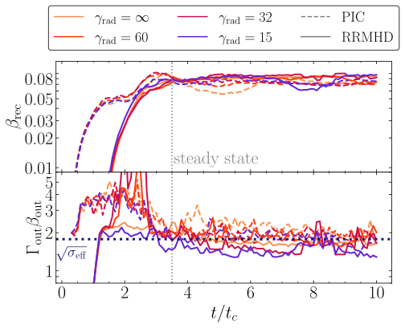
图注：图2：上面板为四种冷却状态（颜色区分）的重联率随时间演化，虚线为PIC，实线为磁流体；灰色竖点线标记稳态起点3.5个光行时，稳态时间平均率约0.08。下面板为出流方向四速度，PIC与磁流体均接近含导引场修正的阿尔芬出流理论值（深蓝点线）。横轴时间以电流片半长的光行时归一；纵轴重联率和四速度均无量纲。所测试冷却强度对重联率及最快出流影响很小。
怎么看这张图：图2：先看灰色竖线后的稳态区间，实线与虚线分别对应流体和PIC，比较每个冷却档的时间波动与平均量。上图率约0.08、下图最大出流接近导引场修正的阿尔芬值，说明冷却显著降温时仍能保留主要重联动力学。这里的出流采用最大值，不等同于所有磁岛平均速度，需与图3的分布信息配合。 检验冷却处方是否保留正确的宏观供能及出流尺度。
来源与置信度：arXiv HTML；source verified；https://arxiv.org/html/2611.28035v1/vrec_v2.svg
图3：热粒子谱与整体运动谱的适用边界
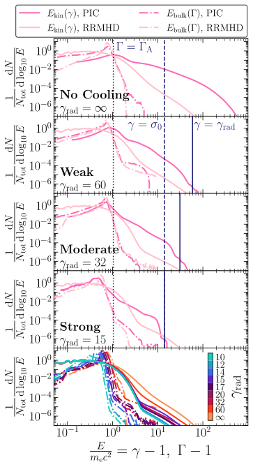
图注：图3：上方四个面板分别比较不同冷却状态下PIC（粉色）与RRMHD（浅粉色）的粒子动能谱（实线）和整体运动能谱（点划线）。横轴为以电子静能归一的粒子或整体动能，分别对应粒子或整体洛伦兹因子减1；纵轴标为按总粒子数归一的每对数能量间隔计数；竖线分别标示阿尔芬整体洛伦兹因子（点线）、上游磁化参数对应粒子因子（虚线）及辐射平衡因子（实线）。整体运动谱在各冷却档吻合；强冷却压低PIC高能尾，使粒子谱更接近RRMHD热重建结果。最下面板仅列RRMHD表1全部冷却档，显示冷却增强时谱向低能移动。原图注称按总能量归一，而正文称按各自总粒子数归一，故归一化的绝对物理口径存在表述差异。
怎么看这张图：图3：先找整体运动谱的峰，再比较粒子谱高能端。两代码整体运动分布的接近是最强证据；无冷却时PIC存在流体无法生成的尾部，则是最明确的能力边界。强冷却使差异缩小，应理解为尾部被耗散压制，而非流体重建出了加速机制。图注/正文的总能量与总粒子数归一化措辞不一致，故本图只用于谱形、峰位和相对差异，不从曲线高度推绝对发光效率。 同时呈现闭合成功的热峰/整体运动与无法自洽描述的非热尾部。
来源与置信度：arXiv HTML；source verified；https://arxiv.org/html/2611.28035v1/spec_v7.svg
强相关工作
本文的电阻处方继承Moran等（2025，arXiv:2501.04800）对全动理学重联的有效电阻研究，以及Ripperda等（2026，arXiv:2601.02460）在广义相对论磁流体中恢复约0.1重联率的工作。新增之处是把这种已能控制重联电场的闭合，与同时含热运动和整体拖曳的逆康普顿四力结合，并跨冷却强度对标；因此不应把快重联率处方本身也记成本文首次提出。
辐射物理上，Golan与Levinson（2015，arXiv:1506.08598）的康普顿拖曳四力是附录A的基础；Sironi与Beloborodov（2020，arXiv:1908.08138）以及Sridhar等（2021，arXiv:2107.00263）的PIC冕重联工作说明磁岛整体康普顿化的重要性。本文把其宏观统计带进流体框架，但没有替代PIC对粒子尾部的描述。Kinch等（2020，arXiv:2009.01914）的吸积流热逆康普顿冷却模型则提供另一对照：只处理热损失不足以保证重联整体运动正确。
同一事件 / 同类源线索：
相似工作：
基础理论 / 方法工作：
相反观点 / 张力线索：
（未提供）
2. Reconstructing the depth of first interaction in extensive air showers from fluorescence detector profiles with a physics-motivated neural network
- 来源：arXiv / astro-ph.HE
- 链接：https://arxiv.org/abs/2611.30661
- 作者：Marcos Olegario, Vitor de Souza
- 公告 / 来源日期：2026-11-24
- 阅读层级：重点精读
- 评分：novelty 8/10，importance 8/10，relevance 9/10，final 9.35/10
- 推荐理由：以四百万条质子/铁簇射及端到端荧光探测器响应训练物理约束网络，结合Gaisser-Hillas解码与事件级分位数误差，在10^19 eV质子获得约21 g/cm²首相互作用深度误差并从尾部分布恢复相互作用长度、模型系统学约4%；从真实探测条件保留首相互作用信息是具体显著方法推进，可精读。全文必须核实跨强子模型验证、尾部选择、成分污染和区间校准，不能写成实测截面。
中文题目：从荧光纵向轮廓反推宇宙线第一次相互作用：带物理解码器的分位数网络
做了什么：第一次核碰撞发生在空气簇射尚未足够明亮的高层大气，荧光望远镜通常只看到后续发展。本文用400万条CONEX质子与铁核模拟，覆盖 $10^{18}$—$10^{20}$ eV、EPOS LHC-R和Sibyll 2.3d两种强相互作用模型，并加入类似Auger荧光望远镜的光传播、电子噪声、触发和重建。网络一支用Gaisser–Hillas函数重建轮廓，一支输出第一次相互作用深度 $X_{\rm first}$ 的七个条件分位数；前者约束物理形状，后者保留逐事件不可消除的不确定性。
在 $10^{19.0}$—$10^{19.2}$ eV的混合模型测试中，质子的平均绝对误差由理想轮廓的约14增至探测器层面的约21 $\mathrm{g\,cm^{-2}}$，相关系数从0.87降至0.75。重构分布最深20%的尾部可用于估计质子—空气相互作用长度，两强子模型给出的系统差异约4%。这是模拟方法验证，并未测得新截面：原始样本重抽几何以保留真实深度分布，模拟真实选择后相互作用长度会偏低约12%，施加几何保真切选才能把这一偏差降至约1%。
为什么重要：常用的簇射极大深度 $X_{\max}$ 同时混合了首次碰撞位置和后续级联涨落，截面推断因此需要模拟校准。本文把“完整轮廓还有多少首次碰撞信息”落实到含探测器响应的定量实验，并把单事件估计与总体指数尾部连接起来。贡献在于展示一条可检验的替代分析路径，而非消除了强子模型依赖；对铁核的信息损失及选择效率造成的偏差，也明确揭示了方法的边界。
理论 / 观测 / 仪器方法价值：值得借鉴的是把已知的轮廓生成函数作为无可训练参数的解码器，同时用条件分位数承载未观测自由度。仅给一个回归值会把尾部压向平均值，可能毁掉用于截面估计的信息；七个有序分位数则能构造事件级分布。移植这一设计需要真实仪器响应、同源训练/测试隔离、跨物理模型验证和覆盖率检查，不能只比较平均误差。
为什么应该关注：对空气簇射分析，这项工作提醒我们区分重构精度、概率分布校准和物理参数无偏性：三者并不等价。对高能伽马与宇宙线探测器，物理解码加概率输出的设计具有方法参考价值，但这里的输入是超高能宇宙线荧光纵向轮廓，不能直接等同于IACT相机图像。后续最值得看的是氦污染、更多强子模型以及真实大气和光学标定变化会不会破坏尾部。
展开详细解读：文章讲解、背景、理论、重点章节、图表与相关工作
文章详细讲解
科学问题是能否从“看得到的后半段”推断“看不到的第一次核碰撞”。第一次碰撞越深，平均而言整个簇射也越深，但后续多代粒子产生的涨落使这个映射不是一一对应。因此作者并不把极大位置减去一个常数，而是让网络利用轮廓形状、深度采样和能量的联合信息。
方法中最关键的取舍，是同时要求网络解释观测轮廓与预测隐藏变量。卷积编码器处理不等长轮廓，掩码排除补零点；物理解码器输出三个Gaisser–Hillas参数并在原采样深度重建轮廓，另一个分支输出七个递增分位数。形状重建任务本身不需要真实的首次碰撞标签，分位数任务则仍依赖模拟标签，因而不能将整个训练称为无模拟依赖。
结果显示质子仍保留可用信息，但铁核并非仅因平均误差看起来小就表现更好。铁的相互作用长度只有约10 $\mathrm{g\,cm^{-2}}$，其误差已与真实涨落尺度相当；理想情况下相关系数0.63，探测器响应后降至0.40。质子则在所示能段保留0.75的相关性，且提高能量通常改善探测器层面的平均绝对误差。
局限集中在从模拟总体走向被仪器选中的总体这一步。每条簇射在训练库中都被赋予一个最终能触发的几何，避免深度分布被选择扭曲；真实天空不会为每个未触发事件重新安排一次观测。作者补做效率重加权和几何切选，证明可以缓解偏差，却尚未覆盖氦、低能区完整切选或实际数据标定。下一步必须把这些选择过程纳入同一个前向推断。
关键结果是怎么做出来的
第一步建立受控的模拟对照。四个各100万事件的库分别对应质子/铁与EPOS/Sibyll组合，初级能量在对数上均匀。CONEX用60度天顶角生成足够长的纵向轮廓，随后把以斜深表示的能量沉积映射到重新抽取的0—60度观测轴上；这个60度并不是最终全部观测事件的方向。
第二步模拟可观测性。模型望远镜口径面积3.8平方米、视场仰角1.5—30度、像素1.5度、总效率20%，包含大气散射衰减和触发。要求观测轨长至少300、极大前至少200 $\mathrm{g\,cm^{-2}}$，极大在视场内，像素视线与簇射轴夹角大于20度。后一个要求对应实际分析中抑制直射切伦科夫光的几何选择。
第三步防止数据泄漏并控制比较口径。按初级成分和能段分层划分70%训练、15%验证、15%测试，归一化只用训练子集。理想轮廓被限制在极大前400到极大后100 $\mathrm{g\,cm^{-2}}$；若把CONEX从第一次碰撞才开始的完整序列直接喂入，网络会从序列起点偷读目标。图6和图7因此比较的是有意去除这种泄漏后的理想与实际探测轮廓。
第四步同时检查点估计和概率校准。图8报告残差均值与标准差，二者不同于平均绝对误差；表1显示同模型训练测试的90%区间覆盖率约89.4%—90.0%，但EPOS训练迁移到Sibyll时，质子仅86.7%、铁85.2%，上端漏失偏多。Mix训练可减轻却不能消除这些差异，不能把名义90%区间当成普遍保证。
第五步将每个事件的七分位数表示采样为条件分布，汇总后拟合最深20%的指数尾部。图10中，同模型测试大体恢复输入长度；单模型交叉迁移可达+8.4%或−6.0%偏差，Mix在EPOS和Sibyll上分别约+4.7%和−3.1%。约4%的系统学来自这两个测试结果的半差，并非仪器、组成和理论不确定性的完整误差预算。
最后检查尾部是否仍代表质子传播长度。铁比例增至60%引起的变化不到1%，因为铁平均相互作用很浅；氦的分布与质子更重叠，本文没有模拟。按单次几何效率重加权后，$10^{18.6}$ eV以上长度降低约12%；视场覆盖超过1000 $\mathrm{g\,cm^{-2}}$ 且冲击参数小于15 km后偏差约1%，代价是样本减少2—4倍。这个检查比只展示漂亮的重构相关图更直接决定能否用于截面。
展开背景、理论、公式、模型和章节导读
背景知识
空气簇射是高能粒子撞入大气后产生的级联。大气深度用沿轨道累积的面密度表示，单位为 $\mathrm{g\,cm^{-2}}$，因此不同几何和密度剖面可在近似共同的物质量坐标下比较。荧光信号主要追踪能量沉积，能够重建纵向发展，却没有足够光子直接标记最初的一次强相互作用。
簇射极大是二次粒子最繁盛的阶段，其位置受到初级质量、截面和级联能量分配共同影响。两个相同初级粒子即使在同一深度碰撞，也可能因为第一次相互作用产生的领先粒子和多重数不同而有不同极大位置。把所有极大涨落都归因于首次碰撞，会高估其对截面的直接信息。
在给定能量、成分和截面的理想传播中，首次碰撞服从指数分布。质子更可能进入深尾部，重核则更早碰撞，所以最深事件常被用于抑制重成分污染。但“尾部以质子为主”不是“尾部自动无偏”：探测器看不到很深的极大也会改变指数斜率，氦等中间成分也可能保留在尾部。
已有工作已提出轮廓形状与极大前发展距离相关，也尝试过机器学习首次碰撞重构。本文新增的关键不只是网络层数，而是把荧光光传播、触发、有限视场和重建一起放入输入生成，再比较理想信息与可观测信息。如此才能知道一种理论上存在的相关性，经过仪器后还剩多少。
基础理论 / 方法脉络
Gaisser–Hillas函数是簇射纵向轮廓的经验描述：极大位置控制平移，峰值控制归一化，形状参数控制前沿和不对称性。本文将宽度参数固定为70 $\mathrm{g\,cm^{-2}}$，预测其余三个参数。这里的 $X_0$ 可以为负，是拟合形状参数，绝不是第一次相互作用深度；混淆两者会把经验函数的外推起点当成直接物理测量。
网络的物理分支通过无训练权重的解析函数生成轮廓，所以编码器不能任意输出一条形状，而须落在这一参数化族内。这是一种有物理动机的约束，不等于精确求解级联输运方程。固定宽度和有限函数族也可能在真实轮廓存在偏差时形成模型误差，必须用数据残差检验。
条件分布的必要性来自逆问题的多解性。同样一条有限精度轮廓可以对应不同首次碰撞位置，单一均方误差回归倾向条件均值，绝对误差回归倾向条件中位数，两者都会压缩总体涨落。本文用分位数损失学习条件分布的几个截面，并以正增量强制分位数有序，避免预测的95%位置反而小于50%位置。
总体分布的恢复与单事件排序是两种不同任务。如果条件概率正确，按每个事件的条件分布汇总可以恢复总体尾部；如果只把中位数作直方图，尾部会过窄。反过来，指数形状看起来正确也不证明逐事件确定性很高，网络可能部分依赖训练总体的先验，因此跨成分、跨强子模型和覆盖率都不可省略。
选择效率进入的是概率分布本身。即使重构器在被选样本上完全准确，若深事件的触发效率下降，观测到的指数尾部仍更陡。几何保真切选的目的，是让所用深度范围内效率近似平坦；它牺牲样本量来换取斜率的物理可解释性，和减小单事件重构误差不是同一件事。
公式与推导
以下按“传播—轮廓—概率重构—尾部推断”连接公式。首先，在固定能量与初级成分下，每单位物质量有恒定碰撞概率，生存概率满足（标准传播关系，亦为本文引言基础）
$X$和 $\lambda_A$ 均以 $\mathrm{g\,cm^{-2}}$ 计。目标空气核平均质量 $\langle m_{\rm air}\rangle$ 与核—空气截面给出
后一等式定义后续发展深度 $\Delta X$，说明为什么只用 $X_{\max}$ 还需处理级联涨落；它不是独立观测到两项的分解。
论文式(1)将能量沉积轮廓写为
$G=dE_{\rm dep}/dX$，$\lambda_{\rm GH}=70\,\mathrm{g\,cm^{-2}}$ 是固定轮廓宽度，不是相互作用长度 $\lambda_A$。解码器从三个预测参数得到测量深度处的 $G(X_i)$，使输入轮廓与隐藏表示相连。
对目标先作 $z=\log_{10}[1+X_{\rm first}/(1\,\mathrm{g\,cm^{-2}})]$ 再按训练集标准化为 $y$。论文式(2)用正增量保证有序：
七个水平为0.05、0.10、0.25、0.50、0.75、0.90、0.95。单调变换保持分位数水平，故可反变换回深度单位。中位数作点估计，5%—95%作名义90%预测区间。
论文式(3)—(4)把物理约束与标签监督合并：
这个不对称绝对损失在期望上由对应条件分位数最小化。$\mathcal L_{\rm GH}$ 是参数均方误差，$\mathcal L_{\rm rec}$ 仅比较真正观测点的轮廓；后二者不使用真实首次碰撞标签，只有分位数项直接依赖该模拟标签。
为理解第5节的总体恢复，可把逐事件汇总写成教学表达式
作者从七分位数表示采样形成此类分布，再对最深20%作指数拟合。若深度阈值 $u$ 以上确为无偏单指数分布，则其条件形式为
最后一个均值式是理想未分箱指数似然的教学推导，不是声称作者使用这一特定估计器；它直观说明尾部斜率如何转换到长度，及再由前式得到截面。
真实选择改变条件分布（教学诊断）
当效率随深度下降，额外负斜率使推得长度偏小，这正解释效率重加权后约12%的偏差。因而“直接拟合 $X_{\rm first}$ 无需 $X_{\max}$ 转换因子”并不等于无需模拟或接受度校正。
模型拟合 / 应用方法
输入是每个事件的斜深序列、对数能量沉积、有效点掩码及重构能量，探测器轮廓补到100个采样点。四个残差膨胀卷积块接平均与最大池化，再映射到16维隐变量；这种结构使不等长采样不被补零位置污染。三个物理参数用有界输出，分位数支路还直接接收预测的极大位置，利用两个深度的关联。
超参数通过验证损失选择，训练用Adam和128的批量，最多300轮。前30轮损失权重为(1.0,0.5,0.1)，随后改为(0.1,1.0,0.8)，使开始阶段先学会轮廓，再加强目标与轮廓一致性。验证中位数平均绝对误差控制学习率和早停，最后取最佳轮；这属于监督训练和标定，不是对观测宇宙线做贝叶斯参数拟合。
性能检查包含三个层次：用平均绝对误差和相关系数评估单事件信息，用残差均值/标准差分开偏差与分辨率，用分位数覆盖率检查不确定度。中位数在非对称条件分布中不保证残差均值为零，所以小的非零均值不能自动证明训练失败。另一方面，跨模型下区间上尾或下尾漏失明显不对称，正提示物理模型迁移偏差。
相互作用长度在宽度0.2的对数能段内，从概率重构总体的最深20%拟合。作者先在真实标签上验证尾部估计：平均偏差小于0.2 $\mathrm{g\,cm^{-2}}$，再测重构分布的偏差。这样把“尾部拟合器本身的问题”与“神经网络概率刻度的问题”分开；全局平移不会改变指数斜率，交叉模型长度偏差意味着尺度也变了。
应用到真实数据至少还需三项独立验证。第一，强子模型仅两种、两种初级成分，Mix不是对未知自然模型的完整边缘化；第二，固定大气和荧光产额设置未穷尽实际响应变化；第三，真实样本必须处理深度相关接受度，尤其低能区需额外随能量变化的视场切选。利用不依赖标签的物理损失适应实测轮廓只是作者提出的前景，本文未展示已完成的数据迁移。
重点章节 / 结果段落怎么读
-
第2节先核对两种“几何”：CONEX生成轮廓的60度与探测器重新抽取的观测轴；再读“重抽直到通过”的段落，这决定样本是否代表真实接受度。
-
第3.1—3.2节结合图4读双分支。重点区分GH形状参数 $X_0$ 与目标 $X_{\rm first}$，以及不使用模拟标签的物理损失与使用标签的分位数损失。
-
第4节先看图6的质子/铁对照，再读表1。前者回答有没有单事件信息，后者回答所报概率区间是否可信；不要以铁的较小绝对误差判断它重构更好。
-
第5节及图10把同模型、跨模型、Mix三组比较连起来，再读铁污染与几何效率段落。约4%、不到1%和约12%分别对应不同测试，不能合并成一个总误差或互相替代。
-
结论末段列出真实应用前缺口：氦、更多强子模型、选择效率和数据适应。它们界定本文目前是可行性验证而非测量成果。
关键图表与解读
图4
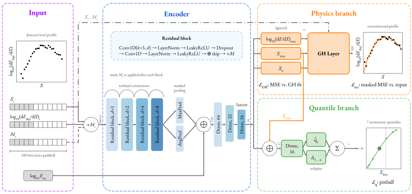
图注：首次相互作用深度重构网络结构。插图为EPOS LHC-R测试集中对数能量19.3的质子簇射，由Mix网络重构，展示输入轮廓、GH重建与预测分位数；中位数特别标出，虚线表示真实首次相互作用深度。灰色数字为张量维数，各输出旁标明损失项。
怎么看这张图：先沿输入轮廓走到共享隐变量，再分开看GH轮廓重建与七分位数输出。前者约束形状，后者描述同一轮廓对应多个首次碰撞深度的不可逆性；图内单事件只是结构示例。 说明方法新增的物理解码与概率输出如何分工。
来源与置信度：arXiv HTML；source verified；https://arxiv.org/html/2611.30661v1/architecture.svg
图6
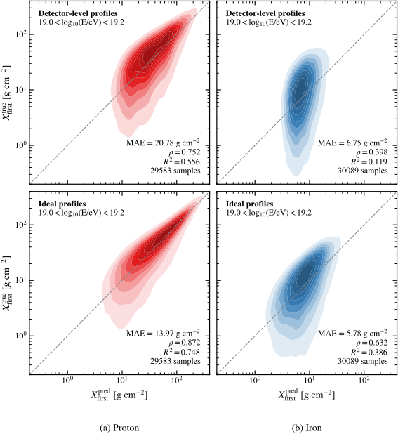
图注：对数能量19.0至19.2能段内，真实与预测首次相互作用深度的比较，深度单位为g/cm²。(a)质子、(b)铁核；上排使用探测器层面轮廓，下排使用理想轮廓。两个网络均在包含EPOS LHC-R与Sibyll 2.3d、质子与铁的Mix数据上训练和测试；面板报告平均绝对误差、相关系数和决定系数。
怎么看这张图：对照上排探测器轮廓与下排理想轮廓，再比较质子和铁。铁的绝对误差较小不代表保留信息更多，应结合其真实深度变化范围和相关系数看；这些是模拟测试事件。 支持实际探测器信息损失及质子/铁适用性差异。
来源与置信度：arXiv HTML；source verified；https://arxiv.org/html/2611.30661v1/kde_pred_true.svg
图10
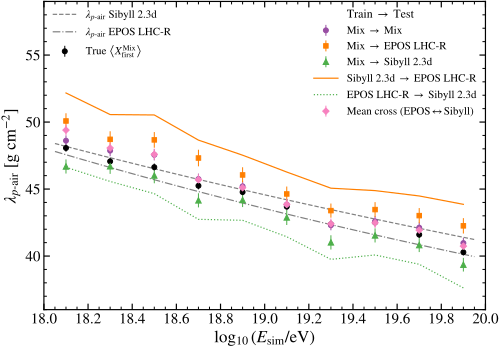
图注：质子—空气相互作用长度随能量变化。灰色虚线和点划线分别为CONEX中Sibyll 2.3d与EPOS LHC-R真值，黑圆点为Mix测试集质子的真实平均首次碰撞深度。彩色圆点、方块和三角分别为Mix网络在Mix、EPOS、Sibyll测试集的重构；实线与点线为Sibyll训练到EPOS测试及反向迁移，菱形为两者平均。重构来自深度分布最深20%的指数拟合，对数能量分箱宽0.2；相互作用长度单位g/cm²。
怎么看这张图：先看同一能量处不同训练/测试组合相对灰色真值的偏移。Mix位于两模型之间而不等于消除模型偏差；图中约4%是模型比较尺度，真实选择效率还需另行校正。 连接概率重构与物理相互作用长度，直观看出强子模型系统学。
来源与置信度：arXiv HTML；source verified；https://arxiv.org/html/2611.30661v1/lambda_energy.svg
强相关工作
本文引言沿用Auger与Telescope Array从 $X_{\max}$ 深尾部推断质子—空气截面的路线。Auger的57 TeV质心能量测量（参考文献5，https://arxiv.org/abs/1208.1520）与TA混合观测分析（文献6，https://arxiv.org/abs/1505.01860）提供的是实测结果；本文则尝试把拟合变量换成重构的首次碰撞深度，以减少后续簇射发展转换。两类工作共享尾部选择和成分污染问题，因此本文的“无需转换因子”不能解释成比这些测量更少一切系统误差。
形状与首次碰撞的关联来自Andringa、Conceição和Pimenta的纵向轮廓工作（文献8），先前逐事件机器学习尝试还包括Yapici的2015年博士论文（文献9，https://digitalcommons.mtu.edu/etds/1019/）。本文的增量是探测器层面的检验、物理函数解码以及条件分位数输出。网络结构借鉴ALPS（文献14，https://doi.org/10.52202/068431-1248），但增加了适合不可逆簇射过程的概率支路；物理可解释参数与正确的不确定度必须分别验证。
同一事件 / 同类源线索：
相似工作：
基础理论 / 方法工作：
- https://arxiv.org/abs/1208.1520
- https://arxiv.org/abs/1505.01860
- https://doi.org/10.52202/068431-1248
相反观点 / 张力线索：
（未提供）
3. Long-Term Evolution of Hills-Captured Stars with TDE Disk Collisions: Links to Repeating Nuclear Transients
- 来源：arXiv / astro-ph.HE
- 链接：https://arxiv.org/abs/2611.28220
- 作者：Howard Hao-Tse Huang, Philippe Z. Yao, Wenbin Lu, Eliot Quataert
- 公告 / 来源日期：2026-11-24
- 阅读层级：重点精读
- 评分：novelty 8/10，importance 8/10，relevance 8/10，final 9.00/10
- 推荐理由：联合Hills捕获、恒星演化、TDE盘拖曳/剥蚀、GW与随机弛豫，指出传统时间尺度比较高估EMRI形成并预测QPE轨道周期下限与黑洞质量依赖；给出厚盘条件下达QPE轨道比例数量级增益，物理链完整，全文需核查盘占空比、H/r约0.1及碰撞处方是否主导结论。
中文题目：恒星怎样活着抵达QPE轨道：TDE盘拖曳、剥蚀与潮汐损失锥的竞争
做了什么：准周期爆发（QPE）的恒星撞盘解释，首先需要一颗恒星在黑洞附近数小时至数天的轨道上存活。Hills机制可在双星被黑洞拆散时俘获其中一颗，但初始轨道通常很偏心、周期长得多；把轨道缩短的气体碰撞又会剥掉恒星，而附近恒星的引力扰动可能先把它推进潮汐瓦解边界。本文把反复出现的潮汐瓦解事件（TDE）残留盘、撞盘拖曳和质量损失、MESA恒星质量—半径关系、引力波耗散及随机角动量弛豫联立，逐步比较每种过程的作用。
模型给出两项具体推进：只靠气体拖曳存在由剥蚀决定的最短周期，较大黑洞处近似随黑洞质量线性增加；传统“引力波缩轨快于角动量弛豫”的条件仍会高估存活率，因为靠近瓦解边界的恒星无需角动量改变到自身量级就会被毁。厚盘拖曳可显著提高达到短周期轨道的最大成功比例，但这里的“最大”是在初始轨道中择优，既不是总体形成率也不是可探测QPE率。太阳型恒星模型仍难解释最短周期的eRO-QPE2和RX J1301.9+2747。
为什么重要：许多QPE模型从一颗已经处在紧轨道上的恒星开始，本文追问这个初始条件能否通过长期演化真正获得。它把帮助缩轨的盘气体和伤害恒星的盘气体视为同一物理作用的两面，同时把损失锥边界纳入存活问题，因此不再只用某两个局部时间尺度的大小推断成功。这提供了可被黑洞质量—爆发周期分布检验的形成通道约束；结果支持部分参数区间的可行性，并未选定所有QPE的唯一机制。
理论 / 观测 / 仪器方法价值：方法价值在于用分层数值实验拆清因果：先只留碰撞得到质量损失与缩轨的比例，再加不直接剥蚀恒星的引力波，最后加入随机角动量扩散检查能否存活。沿途使用同一质量—半径响应，避免把剥蚀后的恒星仍当作原大小。对重复核瞬变的建模，可借鉴这种把耗散收益与生存代价同时演化的办法；具体数值则依赖盘厚度、碰撞失质标定、初始双星族群及核星团弛豫，不能把一张最大成功率图直接转换成事件率。
为什么应该关注：这项研究把短时X射线爆发连接到长期的盘补给与恒星动力学，对理解核区能量供给、TDE后活动持续性和周期变化都有价值。短周期源若确由恒星撞盘产生，会对恒星致密程度及盘是否由磁压撑厚提出要求。后续观测应同时跟踪爆发周期、耀发光度随盘衰减的变化、宿主黑洞质量与恒星族群；单独发现周期漂移，仍无法区分盘拖曳、引力波及轨道进动等作用，本文也没有计算高能伽马或中微子信号。
展开详细解读：文章讲解、背景、理论、重点章节、图表与相关工作
文章详细讲解
科学问题是一个形成与存活问题，而不只是如何让一次撞盘发光。Hills俘获后的恒星近心距可在潮汐半径的几倍，却带着很大的半长轴；它看似已经靠近黑洞，实际上大部分时间仍远离中心。要形成小时至天的重复撞盘系统，必须移除大量轨道能量，又不把恒星撞散或让近心点落进潮汐瓦解区。论文据此把轨道、质量和半径作为耦合变量，而不是固定一条轨道累计光度。
作者用平均TDE盘代表漫长演化中许多短暂供气阶段。每次TDE的盘先黏滞扩展，再逐渐稀释；将表面密度按TDE率作时间平均，求恒星在近心点及盘能覆盖的远心点处受的拖曳和质量损失。失质关系来自先前二维流体碰撞模拟，半径响应来自MESA轨迹的有理函数拟合；引力波轨道耗散使用Peters方程，随机引力遭遇则用角动量的高斯增量实现。
结果先显示气体存在双刃剑效应。更大表面密度同时增强拖曳与剥蚀，只能加快演化，不能任意突破最终周期底线；厚盘可降低每份拖曳对应的失质，但失质效率达到下限后这条路也饱和。引力波不直接带走恒星质量，可在较大黑洞处帮助穿过碰撞底线；不过加入弛豫后，许多本可缩轨的恒星先遭潮汐破坏。模型的改善来自用“离破坏边界还差多少角动量”衡量剩余生存时间。
观测比较揭示了形成通道的选择性。基准厚盘、较长弛豫时间的模型更容易形成约半天以上的QPE轨道；更短弛豫时间配更高TDE率可救回部分较长周期系统，却仍难产生最短周期。作者将eRO-QPE2和RX J1301.9+2747指向更致密的低质量或剥离恒星，这是根据太阳型模型失败提出的后续方向，并非已经对这些恒星种类完成同样的族群模拟。
关键结果是怎么做出来的
第一步构造真正进入轨道演化的气体量。模型取固定黏滞参数0.1与盘高宽比，把一次太阳型恒星瓦解留下的初始盘质量设为约0.13至0.5个太阳质量，低黑洞质量时考虑早期超爱丁顿外流减少留存质量。盘初始半径为太阳型恒星潮汐半径的两倍，最大扩展到初始半径的十倍。最终使用的平均表面密度由TDE率、盘厚度和黑洞质量控制，不等于有一张同样密度的永久AGN盘。
第二步把一次碰撞造成的缩轨和剥蚀放在同一个账本。高速撞盘拖曳按几何截面积计算，质量损失按冲压与恒星内部压力之比标定。作者保守地取单次冲击和累积冲击两种处方中较大的失质值；MESA轨迹显示恒星先收缩，接近等熵核心后才可能膨胀。常规积分在质量降到0.4个太阳质量或近心点低于初始太阳型潮汐半径两倍时停止，图7为展示后续趋势才放宽到0.1，不能混用这两个结束条件。
第三步在没有引力波和弛豫时识别周期底线。近心点撞盘占主导时，近心距近似保持而半长轴下降；当轨道越来越紧，单位对数缩轨所损失的质量增加。因为拖曳与剥蚀都正比于表面密度，其比值不含盘气体量，图4–5因此得到对TDE率不敏感的最终周期。大黑洞、厚盘极限下失质效率趋于约6×10⁻⁴，最短周期近似正比于黑洞质量，盘拖曳单独难让质量约百万太阳以上的黑洞周围恒星达到亚日轨道。
第四步加入引力波检查这条底线是否绝对。引力波造成缩轨而不在模型中直接剥去恒星外层；高偏心极限下，其相对气体拖曳的效率随黑洞质量增大而增强。图8显示盘厚度0.1且TDE率不太高时，较大黑洞处也可到亚日周期。这里仍只问确定性轨道能否到达，尚未回答在核星团随机扰动中有多少颗能活着走到那里。
第五步加入蒙特卡洛角动量扩散。无盘的图9显示传统引力波/弛豫等时线以下仍有大量失败轨道；改用到潮汐边界的局部扩散时间，约3倍该时间与缩轨时间相等的曲线更接近模拟过渡区，但它仍是经验近似而非锐利分界。沿Hills初始轨道线取最有利条件，无盘且弛豫3 Gyr时最大成功比例不足约1%，10 Gyr时通常不足约10%；加入基准盘后，10天阈值的代表性最大比例约从5%升至30%。这不是一概“所有源增加一个数量级”。
最后检查参数与观测。图12中更高TDE率能提高输送速度，也能在较大黑洞处使剥蚀底线更显著；薄盘虽让许多恒星到十天周期，却抑制亚日轨道。图13只把观测周期和黑洞质量叠在最大成功率图上，并没有拟合探测选择函数。QPE每轨可出现一次或两次耀发，黑洞质量又常依赖低质量宿主上校准较差的尺度关系，因此某个观测点落在灰区不能直接换算成显著排除。
展开背景、理论、公式、模型和章节导读
背景知识
QPE是星系核中反复出现的软X射线亮化，间隔从小时到天，单次持续时间通常只是间隔的一小部分。一种图像是恒星或致密天体每次穿过吸积盘时撞击气体，使气体加热后发光；一次轨道可穿盘两次，偏心或倾斜几何可造成长短间隔交替。因此观测到的重复间隔首先是一个时钟线索，不会自动等于完整轨道周期，也不足以排除盘不稳定等其他机制。
Hills机制提供一种把普通恒星送近黑洞的方法。双星整体接近黑洞时，黑洞的差分引力拆散双星，一颗获得正能量飞走，另一颗被俘获。俘获星的近心点可以很小，但其轨道通常极偏心。近心点小只说明最近接近距离，不说明轨道束缚能已很大；把长而窄的椭圆变成紧轨道仍需要额外耗散，这正是形成问题与单次爆发问题的差别。
另一颗星被潮汐瓦解后，其部分物质可留在黑洞附近形成短暂盘。盘受黏滞输运向外铺展，因而能逐渐扫过已被俘获恒星的轨道；多年到几十年的供气窗口与相隔上万年量级的TDE并非同一时间尺度。论文把反复盘阶段平均化来研究长演化，合理性主要依赖单次轨道变化对表面密度近似线性，不能自动保证最终快速剥蚀阶段仍适用。
核星团中的引力遭遇会使轨道角动量随机行走。高度偏心轨道的角动量远小于同能量圆轨道值，所以相对较小的扰动就会显著改变近心点；若跨过潮汐瓦解阈值，恒星不能继续充当稳定的轨道体。这一“损失锥”像一个吸收边界：比较随机步长是否达到当前角动量本身，和比较它是否已走到边界，是两个不同问题。论文修正传统判据的物理理由就在这里。
基础理论 / 方法脉络
轨道的两个关键量是束缚能与角动量。半长轴决定前者，近心点与偏心率反映后者；只去掉能量而几乎保持近心点，会先把高偏心轨道压缩。文中把碰撞近似放在近、远心点，并让阻力反向于恒星速度，于是近心点碰撞保留近心距、远心点碰撞可以继续压低它。这一简化便于隔离机制，却没有逐一积分任意倾角、任意交点和真实盘旋转速度的几何。
拖曳的几何截面正比于恒星半径平方，而抗冲压的内部压力近似正比于质量平方除以半径四次方。因此失质改变半径后会反过来改变下一次碰撞：收缩可以减弱碰撞作用，剥到等熵核心后的膨胀则会增强剥蚀。MESA轨迹中的转折不是附带细节，而是解释模型为何设置保守失质停止条件的关键。作者将恒星结构简化成质量的函数，没有自洽追踪每次撞击注热与潮汐热的全部历史。
盘厚度的作用也不能只说成“厚盘稀”。在相同表面密度下，厚盘降低峰值密度和冲压，拖曳总冲量却仍主要取决于穿过的气体柱。在本文的失质标定里，厚度还改变冲击持续时间相对恒星大小的比值，从而改变失质效率；提高盘厚度可减少单位轨道能量损失的生存代价，但达到失质效率渐近下限后，继续加厚就不能无限缩短周期。
引力波与盘拖曳对恒星质量的作用不同。前者从轨道抽走能量和角动量，模型中不直接剥蚀；后者每次都有失质代价。高度偏心时两种缩轨时间都约含半长轴平方根，而对近心点的幂次不同，因此相对重要性主要由近心距和黑洞质量决定。实际族群还会被角动量扩散筛选：物理上能存在一条成功轨道，并不保证大多数初始条件能走上它。
蒙特卡洛中恒星角动量增量有均值漂移与随机方差，不能简单每步加一个固定的负转矩。作者忽略较慢的能量弛豫，并以快速相对论近心进动抑制相干转矩为由不计共振弛豫；随后在讨论中承认真实核星团的扰动体、半径依赖和恒星碰撞会改变结果。特别是高TDE率可能意味着更密的近核星群和更快弛豫，所以把盘率和弛豫时间分别扫描，展示的是条件可行域而非自洽星系族群。
公式与推导
以下公式来自论文§1–5；为保持主线，盘演化只写文中标度，标为教学整理的部分仅用于解释周期下限。令黑洞质量为\(M_{\rm BH}\)，恒星质量和半径为\(M_*\)、\(R_*\)，轨道半长轴和近心距为\(a\)、\(r_p\)。先从Hills捕获的初态与Kepler周期开始：
\(a_b,M_b\)是原双星的间距及总质量。这个初态解释了近心距虽小，周期却仍长：要减小周期，必须显著减小半长轴。
一次TDE留下的盘使用固定厚度比\(h=H/r\)与黏滞参数\(\alpha\)，其长期标度为
其中质量标度来自盘角动量近似守恒，表面密度标度在盘内成立；没有气体的盘外不可继续套用。文中以\(\langle\Sigma\rangle=\Gamma_{\rm TDE}\int\Sigma\,dt\)平均很多次TDE，所得量仍是面密度，TDE率乘时间积分只给占空比加权。
高速几何碰撞把穿越气柱的动能转移给气体，式(18)–(19)为
因轨道能量与损失都为负，右端为负，半长轴确实缩小。每次变化很小时才可以这样线性更新；能量损失与气柱成正比，是后面消去盘面密度的关键。
同一次碰撞还剥蚀恒星，式(21)–(22)写作
\(H\)按原文是高斯垂向密度的半高半宽。质量损失同样正比于面密度，但无量纲系数\(f_{\rm ml}\)仍依赖\(H/R_*\)，不能把显式\(H\)抵消后就说盘厚度无作用。
在近心点碰撞主导且近心距近似固定时，将失质和缩轨相除得到论文式(30)：
两边无量纲，面密度已经消失。半长轴越小，同样的对数缩轨代价越大；当这个比达到一量级，恒星失质便不能忽略。把\(R_*/M_*\)暂固定的教学标度是\(a_{\min}\propto M_{\rm BH}f_{\rm ml}\)，结合Kepler定律得\(P_{\min}\propto M_{\rm BH}f_{\rm ml}^{3/2}\)。这说明几倍的失质标定误差会明显放大到周期底线。
引力波可在不直接失质的情况下增加缩轨。由文中式(37)–(40)，高偏心、固定其他盘和恒星参数时
两者共同的半长轴依赖消失。Hills典型近心距随黑洞质量的立方根变化后，相对时间约随黑洞质量的\(-4/3\)次方变化；实际初始盘质量也随黑洞质量改变，因此数值曲线可以偏离这个省略参数依赖的纯标度。
存活检验需要角动量。设同半长轴圆轨道的角动量为\(L_c=M_*\sqrt{GM_{\rm BH}a}\)，本文传统弛豫尺度与到损失锥的局部尺度分别为
\(L_{\min}\)对应近心点等于停止边界。靠近边界时，\(L-L_{\min}\)远小于\(L\)，因此真正危险的扩散时间远短于角动量改变自身量级的时间；这便解释传统等时线为何过于乐观。
有气体时，合并缩轨时间及与蒙特卡洛结果相符的近似界线为
这里每个\(\Delta a\)是每轨道的改变；系数3来自本文对过渡区的经验描述，不是普遍稳定性定理。它必须与随机实现的成功比例一起看，而不能把线的一侧解释为必然存活。
最后定义图中真正统计的量：
最大值保留最有利初始轨道。若要推真实发生率，还须对初始双星分布加权、乘捕获率和可见寿命并卷积探测选择；这些不在本文的数值率预测中完成。
模型拟合 / 应用方法
模型没有对观测QPE样本作总体似然拟合，只有一处明确的数值函数拟合：用六参数有理函数表示MESA的质量—半径轨迹。拟合变量是累计失去的质量分数，函数在零失质处锚定初始半径；在0.1太阳质量到初始质量区间检查分母为正，避免非物理极点。对所选MESA轨迹，最大半径偏差小于0.3%、均方根约小于0.1%；这些精度仅说明插值准确，不能消除恒星受热和碰撞处方的物理不确定性。
基准恒星是一太阳质量零龄主序星，长时半径轨迹取连续每年10⁻⁷太阳质量失质。作者比较了不同失质率及间歇移除质量，并另算0.5和1.5太阳质量轨迹；间歇计算在不稳定高失质阶段会失败，因此不是所有末期结构都被独立验证。碰撞模型取单/多冲击失质率中较大者，且把二维多方星模拟的标定外推到更大参数范围，最终周期的不确定性主要由这种物理标定控制，不由有理函数的千分级误差控制。
随机轨道积分只扩散角动量，固定不随半径变化的两体弛豫时间；每步同时更新半长轴、近心距、恒星质量及时间。步长由缩轨、失质和弛豫中最快过程决定，使用0.001的控制系数，最小一步为一个轨道。达到近心停止界、质量低于0.4太阳质量或超过1 Gyr即终止。后者是演化时长截断，不能与允许扫描到100 Gyr的背景弛豫参数混同。
初始轨道网格图每点300次随机实现；求最大成功率时沿Hills线取100个几何间隔近心距，每个1000次实现。图10阴影是Wilson二项分布2σ区间，衡量有限抽样误差，不涵盖盘厚度、失质标定和核星团结构误差。又因为最终统计取最大值，它故意不依赖未知的真实双星间距分布，代价是只能判断是否存在高效通道，不能给出一个星系有多少QPE。
观测侧采用文献中的重复周期与黑洞质量，QPE额外用两倍范围容纳一轨一次/两次耀发。原表还指出各文献时间误差可能是范围或散布，并非统一1σ；不少宿主质量误差接近数量级，且超出一千万太阳质量的部分未被模拟。基准模型要求较高TDE率又有10 Gyr慢弛豫，作者自己指出两者可能不自洽；较快弛豫的替代模型则丢失最短周期。因而图13应读作待观测约束的机制比较，而不是两个已拟合成功的星系总体模型。
重点章节 / 结果段落怎么读
-
§2.1–2.3从盘气体到恒星响应：核对时间平均面密度、一次撞盘能量损失和失质效率，尤其图1的厚度依赖与图2的收缩—膨胀转折。这决定后面周期底线是否有物理来源。
-
§3式(30)和图4–5：问增加盘质量为什么不能无限缩短周期。跟住面密度在失质/缩轨比值中的抵消，再看厚盘渐近失质效率；不要把演化速度与最终可达位置混为一谈。
-
§4图6–8：引力波为什么更能帮助较大黑洞处的恒星？先看时间比的近心距与质量标度，再看加入无直接失质的能量耗散后周期底线怎样变化。
-
§5.1–5.2图9：从确定性轨道转向生存概率。重点比较传统角动量弛豫时间和到瓦解边界的局部扩散时间，理解两条红线之间为何仍会有大量失败轨道。
-
§5.3–6图12–13：先读f_QPE,max的定义，再看观测点和灰区。最后逐项核对最短周期失败、盘厚度要求、盘率/弛豫相关性以及失质外推，使可行通道与全体源的确认保持区分。
关键图表与解读
图9：传统EMRI判据与随机存活率
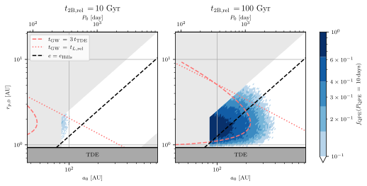
图注：图9：初始半长轴—近心距网格中，恒星达到周期小于10天的比例；横轴为初始半长轴a₀/AU（上轴对应初始周期P₀/天），纵轴为初始近心距rₚ,₀/AU，色标为成功比例。黑洞质量为10⁶太阳质量，此处不含星—盘碰撞。每个网格点进行300次蒙特卡洛模拟。左、右面板的两体弛豫时间分别为10与100 Gyr。浅灰区未采样，深灰区为近心距低于模型潮汐瓦解阈值。红点线为传统引力波缩轨时间等于角动量弛豫时间的边界，红虚线为引力波时间等于三倍到潮汐边界局部扩散时间的新近似边界；黑虚线为典型Hills俘获偏心率对应初态。
怎么看这张图：图9检验本文最重要的生存判据修正。先比较两个弛豫时间面板，再在同一面板看传统红点线以内是否仍有低成功率区域；这说明“引力波快于改变整个角动量”还不足以保证恒星远离瓦解边界。新红虚线用到边界的扩散时间，较贴近概率过渡，但色图过渡并不锐利，所以系数3不能替代随机模拟。 直接支撑从角动量整体弛豫改为到潮汐边界扩散的主要科学结果。
来源与置信度：arXiv HTML；source verified；https://arxiv.org/html/2611.28220v1/M_BH6_t_rel10_100Gyr_no_disk_QPE_fractions.svg
图13：最大形成比例与观测QPE、重复TDE比较
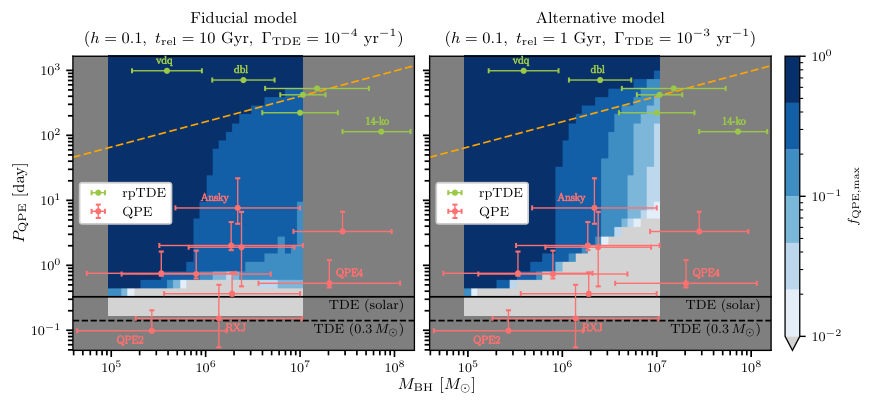
图注：图13：沿Hills初始轨道线择优后的最大QPE轨道形成比例，在黑洞质量与周期阈值平面上的分布；横轴黑洞质量以太阳质量为单位，纵轴周期阈值以天为单位，色标为最大成功比例。左图为基准盘厚度比0.1、两体弛豫10 Gyr、每年TDE率10⁻⁴；右图厚度比仍0.1、弛豫1 Gyr、TDE率10⁻³。浅灰色表示最大比例低于1%，深灰色表示模拟范围之外。橙线为直接Hills俘获的最短周期，黑线为太阳质量恒星及0.3太阳质量恒星的潮汐限制周期。叠加点为已知QPE及重复部分TDE的重复时间与黑洞质量；QPE周期另加两倍范围，以容纳每轨一次或两次耀发。宿主尺度关系给出的黑洞质量存在较大系统不确定性。
怎么看这张图：图13把形成通道与真实源放在同一质量—周期平面。颜色表示沿Hills初态择优得到的最大成功比例，并非预测的源密度；左、右参数组合有不同的盘率与弛豫时间。重点看最短QPE与太阳型潮汐周期线的相对位置，并同时看质量和周期误差。灰区不能简单当作观测排除，深灰是根本没有模拟；尤其大质量rpTDE只能作外推讨论。 呈现具体观测适用范围、太阳型恒星模型失败和参数退化，避免只展示成功区域。
来源与置信度：arXiv HTML；source verified；https://arxiv.org/html/2611.28220v1/f_QPE_max_preferred_models.png
强相关工作
Linial与Metzger（2023，arXiv:2303.16231）提出EMRI恒星与TDE残留盘碰撞产生QPE的图像，Lu与Quataert（2023，arXiv:2210.08023）讨论轻度偏心轨道上的不稳定质量转移；两者都要求先有足够紧且能存活的轨道体。本文的新增重点是从Hills初态追踪长期输送，并把同一次气体作用的缩轨收益和失质代价同步计算。AT2019qiz的TDE数年后出现QPE（Nicholl等2024，arXiv:2409.02181）为盘与重复爆发的联系提供观测动机，但不是本文形成率的直接验证。
失质处方依赖Yao等（2025，arXiv:2407.14578）的星—盘碰撞流体模拟，轨道拖曳与周期演化则衔接Linial与Quataert（2024，arXiv:2309.15849）。Kaur等（2025，arXiv:2406.07627）已指出传统GW—弛豫等时线高估EMRI效率，本文用到潮汐边界的扩散时间将这个问题具体化，并加入反复TDE盘。Yao与Quataert（2026，arXiv:2505.10611）的潮汐加热研究提示另一个仍遗漏的结构反馈：本文MESA失质轨迹并不包括完整潮汐热史，最短周期边界须在更完整模型中复核。
同一事件 / 同类源线索：
相似工作：
- https://arxiv.org/abs/2303.16231
- https://arxiv.org/abs/2210.08023
- https://arxiv.org/abs/2309.15849
- https://arxiv.org/abs/2406.07627
基础理论 / 方法工作：
相反观点 / 张力线索：
（未提供）
4. Dual Horizon-MAD: A New Mode of Binary Black Hole Magnetically Arrested Accretion with Saturated Horizon Magnetic Fluxes and Intermittent Minidisks
- 来源：arXiv / astro-ph.HE
- 链接：https://arxiv.org/abs/2611.28237
- 作者：Vikram Manikantan, Vasileios Paschalidis
- 公告 / 来源日期：2026-11-24
- 阅读层级：重点精读
- 评分：novelty 8/10，importance 8/10，relevance 8/10，final 9.00/10
- 推荐理由：全GR双黑洞吸积演化约56轨道，在磁场充分弛豫后发现双视界磁通饱和而迷你盘间歇的新MAD模式，并给吸积/磁通周期分离，具体改变电磁对应体预测；全文需区分单一等质量无自旋初态下的模式与普适现象，非热辐射周期仍属由磁场演化提出的预言。
中文题目：双黑洞视界主导的磁阻塞吸积：长时全广义相对论模拟揭示间歇迷你盘
做了什么：双黑洞周围的气体空腔并非真空：潮汐气流不断送入质量和磁通，每个黑洞附近又可能发生磁通喷发，反过来改变空腔。作者把一个等质量、无自旋、近圆轨道双黑洞从间距$30GM/c^2$演化到约$24GM/c^2$，同时求解Einstein方程与三维理想磁流体，积分约56圈、$52000GM/c^3$。与较短模拟相比，它允许空腔内磁场在持续视界反馈下积累并进入近似饱和。
约23圈后，两颗黑洞的无量纲视界磁通维持在约20，空腔磁通也不再持续增长；磁通喷发仍从各视界附近发生，却未见由空腔边界向外盘喷发。作者称其为“双视界磁阻塞吸积”（DH-MAD）。此时迷你盘只间歇存在，单颗黑洞吸积率主要在$0.9f_{\rm orb}$附近变化，两者反相相加后总吸积率主要为$1.8f_{\rm orb}$；视界磁通另有约$0.4f_{\rm orb}$的峰。这些是单个模拟的流体诊断，尚不是已计算的光变曲线或双黑洞观测判据。
为什么重要：新意在于把“视界附近磁通饱和”和“整个空腔发生磁交换喷发”分开。空腔磁压重要、磁通停止增长，并不自动等于所有方向的吸积都被磁场拦住。长期演化显示，即使几何空间允许迷你盘存在，磁反馈和非对称供气仍可使其间歇消失。因此只按Hill半径与最内稳定轨道判断迷你盘寿命，或者在模拟中挖去视界区域后研究空腔，都可能遗漏与电磁对应体有关的反馈。
理论 / 观测 / 仪器方法价值：可借鉴的是把多个诊断放在同一演化阶段比较：视界磁通、空腔磁通、单颗与总吸积率、Hill球质量、磁场方向和电流片共同约束解释。尤其总信号的频率可能是两个反相信号相加后的谐波，不能直接把观测周期等同轨道周期。作者还用磁场反向验证电流片指示量，避免仅凭低密度或高磁化就认定重联；但网格没有解析重联微观物理，非热加速效率仍未知。
为什么应该关注：对高能时域与多信使研究，值得关注的是光学厚的外盘和可能光学薄的空腔会提供不同的辐射窗口，而磁通喷发可能使非热活动与热供气调制不同步。本文未计算GR辐射转移、电子能谱、X/伽马光变或中微子，不能把$0.4f_{\rm orb}$直接包装成可观测耀发时钟。下一步要检验初始净磁通、自旋、质量比和冷却是否保留该模式，并将动力学频率真正传递到可观测光子。
展开详细解读：文章讲解、背景、理论、重点章节、图表与相关工作
文章详细讲解
科学问题：环双星盘受到双黑洞潮汐作用，内侧形成低密度空腔，但仍通过气流向两颗黑洞供气。短时模拟容易只看到初始松弛与持久小盘，忽略更慢的磁通积累。本文要回答：视界不断吸积和释放磁通后，空腔最终形成什么结构，供气和磁活动的周期是否仍与早期相同？
作者怎么做：用全广义相对论时空演化与自适应网格磁流体，不挖去视界，在相对缓慢的轨道收缩过程中累计约56圈。磁场初始为盘内极向场，最小气压/磁压比约26。分析先区分初始松弛、持久磁阻塞迷你盘和晚期磁通饱和阶段，再比较各阶段的质量与磁场量，而不是将全时段混在一起求一个平均。
关键结果：晚期空腔偏心且左右不对称，一颗黑洞得到较强气流时另一颗较弱；小盘形成、耗尽和受磁通喷发扰动交替发生。总吸积率保留两倍于单颗主要频率的分量，视界磁通却出现更慢频率。磁场在视界/喷流附近以极向分量为主，在空腔主体以环向分量为主，后者可能抑制某些空腔边界交换模。
局限与下一步：这里的“松弛”只指内区若干量达到统计状态，不代表整个外盘已进入稳态；约14000M的慢变化仅有两圈，不能稳健称为周期。只有一个等质量、无自旋配置，电流片厚度约四格，且辐射处理为事后估计。要把DH-MAD变成可用的观测模板，需要参数扫描、收敛检验和辐射转移，而不是直接沿用流体频谱的峰值。
关键结果是怎么做出来的
首先看演化时间是否足以揭示新阶段。初始分离30M，最高分辨率$\Delta x=M/64$，每个视界横跨约64格；外边界5120M。图2显示16000M之前主要松弛，之后出现持久磁阻塞迷你盘，约24000M起空腔磁通由峰值约55转为围绕35波动。新模式由多时段诊断确立，不是一个任意挑选的晚期快照。
接着比较磁通积累位置。作者在轨道面、以不同空腔半径积分垂直磁通并排除视界；0.75与0.9倍空腔半径结果接近，说明大部分所计磁通在内区。视界磁通突降常对应空腔磁通增加，支持磁通由黑洞附近释放进入空腔的图像；没有示踪粒子，不能追踪每束磁通此后停留多久。
第三步才分析周期。图4对35000–45000M附近时间序列减去慢变滑动均值，压低直流和慢趋势泄漏。两颗黑洞吸积率各在约0.9倍轨道频率处最强，且近似反相；相加抵消此分量后，总量以1.8倍为主。Hill球质量也呈交替变化，但总质量和视界磁通具有约0.4倍峰，说明“所有变量共用一个周期”的简单解释不成立。
第四步用空间结构解释统计量。图5的密度和气压/磁压比切片显示由持久迷你盘转为间歇小盘；图6进一步分解极向与环向磁压。空腔主体的环向磁场可能对沿方位变化的径向扰动产生张力，降低交换失稳；但斜向、近乎垂直于磁场的扰动仍可增长，所以这不是全模式稳定性证明。
第五步寻找潜在耗散位置。图7把较大电流与较小磁不变量结合，并叠加磁力线反向，识别视界及穿越空腔的电流片。作者明确说明20–40M处网格约0.5M、电流片厚约2M，因此没有真正解析这些片层。这里支持“存在重联候选区域”，不支持定量电子加速、耀发光度或重联速率结论。
最后检查光子对应关系。作者按总质量$10^7M_\odot$、平均吸积率0.1倍Eddington和辐射效率0.1定标，估计盘中面温度约$10^5$K、流束最高约$2\times10^5$K，空腔对其设定视角较光学薄。图8温度不是光球温度，图9光深也不是完整辐射转移。喷流Poynting效率约1%在200M处测量，属于电磁能流，不等于辐射效率。
展开背景、理论、公式、模型和章节导读
背景知识
超大质量双黑洞可能由星系并合形成，若有气体包围，就会同时涉及引力波与电磁辐射。环双星盘在较大尺度储存质量，而近视界物理影响更高温及非热辐射；这两类尺度之间存在潮汐流和磁场反馈。对于寻找引力波源的宿主，仅凭周期光变并不足以确认双黑洞，因而需要从动力学出发建立可检验的辐射模式。
磁阻塞吸积通常指足够强的有序磁通积累到黑洞附近，磁压力与张力显著改变流入，气体以非均匀、间歇方式穿过磁场结构。它不意味着黑洞停止吸积，更不意味着任意磁压主导空腔都具有相同动力学。双黑洞有两套视界与非轴对称供气通道，单黑洞的经验阈值不能不加说明地平移过来。
迷你盘是每颗黑洞潮汐控制范围内的小型气体盘。通常会比较Hill球和最内稳定圆轨道的大小，判断气体是否有空间环绕；但“有空间”只是必要条件。持续供给、角动量损失、磁通喷发和耗尽时间都会决定小盘是否长期存在，本文晚期仍有足够几何空间而小盘间歇化，正是这一区别的例子。
数值时间跨度同样是物理问题。轨道可以在几十圈内变化有限，而外盘质量重新分布与净磁通积累更慢。预先松弛外盘再加入内区、采用人工吸收边界或近似时空，都有计算优势，但可能改变视界磁通如何回馈空腔。本文强调长期同时解析内区的重要性，并没有证明所有近似方法都会给出错误结果。
基础理论 / 方法脉络
全文以总ADM质量M定长度和时间，但无量纲视界磁通中的引力半径使用单颗黑洞质量。这一区别关系到磁通阈值的数值，比较不同代码或文献时还要核查磁场是否吸收了$4\pi$因子。作者说明其IllinoisGRMHD磁场采用Gaussian归一化，与所比较的标准MAD约定相容；不能将不同定义的20、35和1混成同一磁化度。
视界通量和空腔通量回答不同问题。前者衡量单个黑洞积累了多少磁通并以各自吸积率定标；后者是在轨道面指定曲面上积分，按总吸积率定标。空腔边界实际上偏心、非圆，作者以当前分离d定义参考半径，只将磁通不再增长作为“饱和”的操作定义，而不声称给出了普适的空腔磁阻塞临界值。
磁场方向决定张力是否抵抗某个扰动。极向场大致穿过轨道面，环向场绕质心缠绕；方位上变化的径向位移会弯曲环向场并付出磁张力能量，而某些沿不同方向的位移不必同样弯曲磁场。因而“磁场更强”并不能单独解释边界是否喷发，必须同时看场方向、扰动波矢和三维结构。
电流片是磁场方向快速改变的窄区。在理想MHD中没有显式粒子加速模型，但网格尺度的数值耗散仍可能改变磁拓扑。因此作者用电流与磁不变量比值定位片层，再检查力线反向；这是结构诊断，不是测得碰撞等离子体电阻率，也不是粒子在片层中获得能量的直接计算。
动力学频谱与光变频谱之间还隔着辐射效率、光深、传播时延和观察角。两个相反相位的吸积流相加会消去主谐波，若某波段只看到其中一个黑洞则未必如此。磁通喷发也不一定立即产生可见高能光子。理解这个映射缺口，才能把论文中的潜在周期耀发作为未来模型任务，而不是现成的探测模板。
公式与推导
下面沿“定标—磁通—局部结构—周期”连接诊断。磁通、电流与模式公式来自本文§II.2和附录A；张力和谐波相加用标准教学形式说明其物理含义。
（1）先恢复尺度：
当M指总质量时，它定义模拟的30M分离和52000M历时；视界磁通归一化则另用单颗$M_{\rm BH}$。同样的无量纲演化对应不同天体质量的不同物理周期，不能直接把M单位读成年或秒。
（2）本文式2定义视界磁通参数：
$\Phi_{\rm BH}$由表观视界测量，分母含该黑洞吸积率的滑动平均；其尺度来自质量流入与磁场动力学的比较。约20的饱和是本配置结果，不是所有双黑洞共享的临界值。
（3）空腔量另定义为
$S$为轨道面内、排除两视界的曲面，F是Faraday二形式；这里使用总量定标。多个半径的曲线先积累再变平，支持统计饱和；它不直接给磁场阻挡每一股潮汐流的条件。
（4）检查压力及场方向：
b是流体共动系磁场。故磁压主导必须是$\beta<1$；原文§III.3若干句将高/低β文字写反，应按定义读图，不能沿抄。再比较$b_{\rm pol}^2/b_{\rm tor}^2$，才能知道主导的是哪种方向。
（5）本文式6–7从Maxwell方程诊断四电流，在其Heaviside–Lorentz约定下为
g为度规行列式，时空指标求和；反对称性将协变散度化为此形式。它利用已有场与流体解求导，不额外求解粒子动力学。
（6）进而构造本文式9的无量纲片层量：
此处几何单位下M是长度。场反向处导数大、场强小，因而比值可很大；只有同时看到力线反向，才更有把握认定电流片。高比值并不自动告诉我们耗散功率，分母很小及网格分辨率都需检查。
（7）边界稳定性的教学标度是
$\boldsymbol{k}$为扰动波矢，完整系数取决于惯性及具体介质。环向场对沿方位变化的扰动提供恢复力，但$\boldsymbol{k}\perp\boldsymbol{B}$的模式仍可能增长。这解释作者提出的抑制机制，也限定它不是全三维稳定性证明。
（8）附录A用密度方位分解追踪单臂结构：
m是方位模数，$\rho_0$为静质量密度。早期m=2与双星对称潮汐扰动相伴，约20000M后m=1增长，给交替供气提供空间背景；不能单靠此模就推得所有频谱峰的因果来源。
（9）最后用教学谐波说明总信号：
若$\omega/(2\pi)\simeq0.9f_{\rm orb}$，相加后的显著频率自然约1.8倍轨道频率。这不是论文对每点所做的拟合，而是其反相抵消解释的最简演示；约0.4倍磁通峰还需要独立动力学解释，不能由此公式推出来。
模型拟合 / 应用方法
本文没有观测谱拟合；相应核验对象是一个长时数值实验的设置、诊断和与前人差异。初始等质量、无自旋、近圆轨道由TwoPunctures给出，BSSN演化时空，IllinoisGRMHD演化气体和场。盘内极向场通过矢势注入，最小β约26；正文另用约52的初始参数与前人比较，二者不是同一统计定义，报告时不能互换。
时间分段应先于频谱。图2的初始松弛不能混作平稳噪声，图4分析晚期窗口并去掉周期长于约5000M的慢变化。有限长度、滑动均值和仍在收缩的轨道都会影响谱峰宽度；作者报告的是模拟频率特征，未提供观测噪声下的全局显著性或一个跨全部演化阶段稳定的周期模型。
空间证据用于检验“磁阻塞在哪发生”。视界磁通维持较高水平且突然下降，伴随低密度磁通束；空腔总磁通趋于饱和，却未见向外盘的连贯喷发。环向场占优为这种差异提供候选解释，同时初始净磁通、人工边界处理和时空近似也都可能影响结果；目前没有逐个控制变量的对照来唯一归因。
辐射定标是后处理而非辐射流体闭合。作者指定$10^7M_\odot$、0.1倍Eddington与效率0.1，再将代码密度、压力换为物理量，以电离氢和Rosseland平均不透明度估计正上方视角的光深。原式12把常用辐射常数a写入$aT^4$压力项，而标准辐射压力系数为$a/3$；定量温度因此有书面约定疑点。本稿不沿用该式推导观测温度，所报$10^5$K仅作为作者后处理尺度。
失败边界是可辨识的：外盘未全局稳态，长周期只两圈；空腔片层约四格，无法给收敛重联率；没有辐射转移，不能把中面温度当光球温度；只有一个双星配置，不能称普适模式。作者讨论了这些限制并计划参数扫描。当前最稳健的贡献是展示一种此前短时或挖去内区模拟容易遗漏的演化状态，而不是建立唯一电磁识别法。
重点章节 / 结果段落怎么读
-
§II.1–II.2：先区分总质量定标与单颗视界磁通归一化，再读初始场和分辨率。它们决定20、35等无量纲数究竟在比较什么。
-
§III.1及图2：追踪三个演化阶段，确认新模式何时出现；同时看不同积分半径的空腔磁通，避免把单点最大值称为稳态。
-
§III.2及图4：逐行比较吸积率、视界磁通、Hill球质量的单颗与总量。核心问题是哪些峰因反相抵消消失，哪些慢峰没有确定机制。
-
§III.3–III.4及图6、7：把磁场方向、边界喷发缺失与电流片位置连起来。注意张力抑制特定方向模式，不等于禁止所有交换不稳定性。
-
§III.5–IV与附录A：区分气体中面温度、光球、Poynting能流和实际辐射；最后结合m=1增长及冷却可能抑制单臂结构，评估模式的外推条件。
关键图表与解读
图2
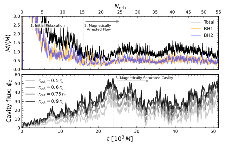
图注：上图为两颗黑洞的静质量吸积率（蓝、金）及总和（黑），按25000–40000M的平均值归一化；下图是在轨道面不同空腔半径内积分并无量纲化的垂直磁通。早期流体松弛、约16000M后持久磁阻塞迷你盘、约24000M后空腔磁通饱和构成三个阶段。晚期磁通围绕约35波动，总吸积率进入新的平均状态并有慢变调制。
怎么看这张图：上下图对齐看阶段转变，不要把归一化后的吸积率1当物理单位。空腔磁通的饱和不等于所有潮汐流均被磁场阻挡；慢变化只有约两圈。 长时演化确立DH-MAD阶段的核心证据。
来源与置信度：arXiv HTML；source verified；https://arxiv.org/html/2611.28237v1/fig1_mdot_cavityflux.svg
图4
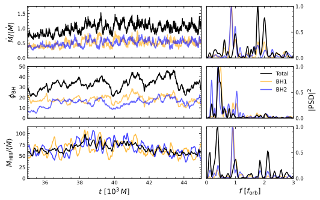
图注：左列依次为晚期单颗黑洞及总吸积率、无量纲视界磁通、Hill球内质量除以相应平均吸积率（具有流入时间量纲）；蓝/金为两颗，黑为总量。右列为去掉慢变化后的Fourier功率谱，频率按轨道频率归一化。单颗吸积率和Hill质量主要在0.9倍轨道频率变化，总吸积率主要为1.8倍，磁通及总Hill质量另有约0.4倍峰。
怎么看这张图：比较单颗和总量可看出反相抵消，不能把不同变量的峰一律当轨道周期。磁通频率是潜在非热活动线索，尚非计算得到的辐射周期。 展示多个诊断的周期及总信号谐波选择。
来源与置信度：arXiv HTML；source verified；https://arxiv.org/html/2611.28237v1/fig3_all_ts.svg
图6
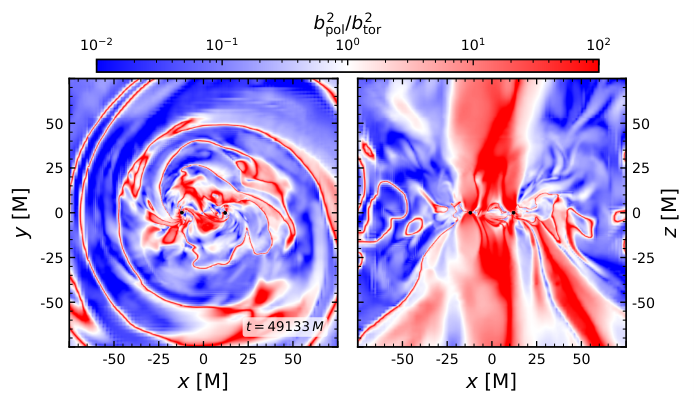
图注：流体共动系极向与环向磁压之比。红色表示极向分量占优，蓝色表示环向分量占优；视界和喷流区主要为极向磁压，空腔主体与环双星盘主要为环向磁压。作者以此讨论空腔壁磁张力对不稳定性增长的影响。
怎么看这张图：场方向提供空腔边界为何未见喷发的候选解释；只有弯曲磁场的扰动受到相应张力抑制，斜向模式不能据此排除。 区分DH-MAD与空腔喷发BMAD的物理机制线索。
来源与置信度：arXiv HTML；source verified；https://arxiv.org/html/2611.28237v1/fig15_bpol_over_btor_pp.png
强相关工作
Manikantan与Paschalidis的2025年论文研究同一模拟脉络中的持久磁阻塞迷你盘，本文的新增量主要来自继续演化到空腔磁通饱和后的阶段，而非独立发现所有磁喷发过程。原文引用的可信链接为 https://doi.org/10.1103/g98b-m8m1 。把前后两阶段并读，有助于理解“迷你盘存在”不是固定的双黑洞几何属性，而会随供气与磁通历史改变。
Most与Wang的2024年工作以及Wang等2025年的BMAD研究显示空腔边界可以发生磁交换喷发，本文却主要看到视界附近喷发。差异可能涉及场方向、初始净磁通及边界处理，尚不能只归为“全GR优于牛顿近似”；相应引用为 https://doi.org/10.3847/2041-8213/ad7713 和 https://arxiv.org/abs/2508.16855 。Combi等2026年的近似时空研究有持久迷你盘，而Kim等2026年的物理冷却研究指出单臂团块可受抑制，进一步提示必须匹配磁化和辐射条件再比周期；本文原引链接分别为 https://arxiv.org/abs/2609.02867 与 https://arxiv.org/abs/2609.21136 。
同一事件 / 同类源线索：
相似工作：
基础理论 / 方法工作：
相反观点 / 张力线索：
5. The Most X-ray Luminous Fast Blue Optical Transient at Early Times: AT 2024qfm and Inefficient Reprocessing of Its High-Energy Emission
- 来源：arXiv / astro-ph.HE
- 链接：https://arxiv.org/abs/2611.28443
- 作者：A.J. Nayana, Raffaella Margutti, Ryan Chornock, James F. Steiner, Erica Hammerstein, Anna Y. Q. Ho, Assaf Horesh, Brian D. Metzger
- 公告 / 来源日期：2026-11-24
- 阅读层级：重点精读
- 评分：novelty 8/10，importance 8/10，relevance 8/10，final 9.00/10
- 推荐理由：AT2024qfm早期约10^44 erg/s X射线、约t^-6衰减后增亮硬化、较早X/光学等亮及射电光谱平台提供相互补充的新约束，并把个例放到LFBOT与GRB余辉谱比较中，显著推进中心供能和重处理环境研究。全文须区分低重处理效率与几何/吸收替代解释，核查多外流推论和射电密度对微观参数的依赖。
中文题目：AT 2024qfm的强X射线与射电停滞：较早透出的高能辐射和多分量外流
做了什么：AT 2024qfm是一颗红移0.227的高光度快速蓝色光学暂现源。作者汇集紫外、光学、软硬X射线与厘米/毫米观测，把热光球、内侧高能发射和外流激波分别约束。最早X射线监测已达到约$10^{44}\ \mathrm{erg\,s^{-1}}$，随后快速衰减并再增亮，伴随谱硬度演化；在作者比较的已观测LFBOT样本中，它在早于20天的软X射线最亮，而毫米峰值最弱。这里的纪录受跟踪样本与观测时段限制，不是完整族群排序。
光学/紫外黑体光度与0.3–10 keV光度在源静止系约7.4天就接近，早于AT2018cow和AT2024wpp；若光学主要由高能辐射再处理而来，这支持沿视线较早低不透明的环境，但不能独立测出全局再处理效率。射电自吸收拟合在均分假设下给25.1天时约$1.32\times10^{16}$cm、平均尺度速度约0.2c及密度约$6.3\times10^4\ \mathrm{cm^{-3}}$。40.5–58.4天的谱几乎不演化，使单个平滑膨胀激波模型遇到困难；不同外流分量进入不同密度环境是可行解释，尚非唯一分解。
为什么重要：本文最有价值的不是把一个事件贴上亮度纪录，而是不同能段给出了相互制约的几何信息。X射线明显高于射电同步谱向高频的延长，不能简单由同一射电电子群解释；热光球又比射电半径小。再把光度比演化与射电谱停滞放在一起，就能检验“同一球对称激波包办全部辐射”的简化图景。中央引擎和辐射激波两类高能供能方案仍存在退化。
理论 / 观测 / 仪器方法价值：分析上的可借鉴点是随谱变化重新标定X射线计数率，并在射电拟合中检验冷却频率是否落到自吸收峰以下，再改用相应的半径、磁场关系。低计数Swift短曝光中的两事件尖峰没有被当成独立极快耀发；后期射电推得的“半径变小”也被用来诊断模型失效，而不是报告激波真的向内缩。跨波段和跨历元的自洽性，比逐个谱都能拟合好更有判别力。
为什么应该关注：这类富X射线且外流环境稠密的暂现源，涉及供能、粒子加速和辐射逃逸的耦合，适合高能多波段跟踪；但本文没有测定高能质子或中微子通量，不能据密度大就推断高效强子辐射。现在最关键的是近同时软硬X射线、紫外及射电覆盖，检验增亮是否伴随供能变化、光深变化或不同外流显现，并用更密集采样区分这些机制。
展开详细解读：文章讲解、背景、理论、重点章节、图表与相关工作
文章详细讲解
科学问题：LFBOT既像迅速变暗的热暂现源，又能持续产生强X射线和射电；这些发射是否来自同一个激波，还是由内侧引擎、再处理物质和外部激波分别承担？AT2024qfm提供了与“光学亮而X射线被遮蔽”相反的一端，可检验再处理几何的多样性。
作者怎么做：先用宿主模板扣除紫外和光学背景，以黑体拟合热连续谱；再把Swift、Chandra、NICER与NuSTAR进行分时段谱拟合，用谱形变化校准软X射线光变。射电部分以平滑折断幂律描述自吸收峰，在明确电子/磁场能量均分与体积填充假设下推断激波半径、磁场和环境密度。
关键结果：热光球在源静止系7.4、9.4、14.2天的温度约16500、14200、10900 K，黑体半径略下降；X射线并不跟着同样的平滑衰减，且在再增亮附近偏硬。射电峰总体从高频向低频迁移，但40.5和58.4天的谱相似，破坏了固定单激波在平滑介质中自由扩展的直观预期。
局限与下一步：光学未见暂现谱线受到信噪比限制，硬X射线未见康普顿隆起也不代表强排除；高能谱可来自慢冷却同步或多温度自由—自由辐射。双外流解释使用外推扣除，并非同时拟合得到唯一几何。需要更早发现、更多同步历元和模型联合推断，才能把这一观测图像转成前身系统的确定识别。
关键结果是怎么做出来的
首先固定时间零点和距离。首次探测与此前非探测之间的中点MJD60514.41被用作first light，红移0.227对应作者采用的光度距离1170.4 Mpc。正文观测日志默认观测者时间，黑体参数和表2射电拟合采用源静止系时间；同一个“第14天”若不注明时间系，会把光度与谱错配。
第二步建立热分量。Swift晚至134天的数据作为紫外宿主模板，光学光谱以恒星族合成模型去除宿主连续谱，窄宿主发射线仍保留。黑体拟合在三个较完整历元给光度$4.7,2.4,0.6\times10^{43}$erg/s及半径$9.4,9.0,7.7\times10^{14}$cm。半径是有效发光面积，不是同一物质面的直接位置；其下降不意味着物质倒流。
第三步从计数而非视觉尖峰检验X射线变化。一个Swift ObsID仅40秒内有2个事件，前后非探测会造成尖峰外观；作者指出其与常源涨落相容的概率约2%，不足单独确立耀发。主光变改用每箱至少5计数。分时段谱采用W统计、银河柱密度$4.7\times10^{20}\ \mathrm{cm^{-2}}$；没有检出内禀吸收后固定为零，并不证明附近没有稠密物质。
第四步利用硬X射线约束谱形。前两次NuSTAR明确探测支撑宽带幂律，第三次仅B模块边缘探测，不增加实质谱约束；NICER占主导的第四历元还估计额外约0.3的光子指数系统误差。图2中$t^{-3}$和$t^{-6}$是引导视线的斜率线，不是附带误差的精确衰减指数测量。最早监测约在爆发后源静止系6–7天，不能沿摘要措辞写成“爆发后的前6天已完整观测”。
第五步把射电峰变成物理尺度并检查跨历元一致性。表2在25.1天给$R=1.32\times10^{16}$cm、$B=5.66$G；40.5天半径约$2.06\times10^{16}$cm，58.4天却为约$1.49\times10^{16}$cm，95.9天再到约$3.63\times10^{16}$cm。这组单历元等效值提示模型假设变化，不能解释成一个真实激波先收缩后膨胀。图5以早期分量恒速和$r^{-3}$环境外推后低估晚期通量，因而存在额外辐射分量的空间。
最后比较三个波段及同类事件。图7的X射线超出射电同步外推，图9给$qfm$在7.4天的X/光等亮，图10给已测LFBOT比GRB余辉更硬的谱分布。这些相互一致地支持发射分区及不同再处理条件；外部再处理层模型需较小赤道覆盖份额，内部激波下游模型也可较早变透明，因此光度比没有独自选出中央引擎。
展开背景、理论、公式、模型和章节导读
背景知识
快速蓝色光学暂现源以数天升亮、蓝色热连续谱和较短演化时间为特征，高光度一类常以AT2018cow为原型。如此短的扩散时间通常要求较小的有效遮蔽质量或特殊几何，但这只是光子逃逸条件，不自动指定能量来自放射性、激波还是吸积。深入跟踪的样本仍很小，本文将AT2024qfm视为约第十二个具有详细多波段资料的事件。
射电同步辐射一般来自外流与星周介质相互作用后产生的相对论电子和磁场。低频光子被同一电子群重新吸收，形成自吸收峰；峰的位置和强度同时携带源面积与磁场信息。因此射电可以探查光球以外、约$10^{16}$cm尺度的环境，但转换需要电子分布、几何和能量分配假设。
X射线可以由更紧凑的供能区产生，再被周围物质吸收、散射并重发射成紫外/光学。随着物质膨胀，视线透明度提高，X/光比例可能上升；若介质不对称，观察方向和覆盖角也影响比例。另一类模型把高能发射放在新鲜激波后，而光学来自更冷的下游，同样可产生相连但不完全同步的多波段演化。
“没有吸收”和“没有谱线”都是有限数据下的判断。高度光电离可让稠密气体在软X射线近乎透明，孔隙也可提供低柱密度视线；较弱光学信号则可能掩盖其他事件已经看见的宽线。故不同波段的未探测应连同灵敏度、光深与电离状态解释，不能直接当作物质不存在的证明。
基础理论 / 方法脉络
热连续谱的温度与半径来自颜色和归一化，只有在近黑体、已扣除宿主并作消光校正的条件下才有此解释。黑体半径随有效光球在膨胀物质中移动而变化，不必跟物质坐标同步。本文$R_{\rm BB}/t$约0.02–0.05c只是平均尺度速度，不能与射电激波的0.2c当作同一物质的两个冲突测量。
电子谱通常写成$N(E)\propto E^{-p}$。同步冷却会使高频谱比未冷却段陡半个指数，因此观测薄区斜率不能在不判断冷却位置时直接换成p。本文以p=3为射电基准，对冷却频率低于自吸收峰的历元重新拟合薄区斜率-1.5，而较晚历元使用-1。这里应明确是冷却峰与吸收峰的相对位置，避免把“峰上已冷却”混同所有电子均处于同一种快冷却排序。
自吸收的厚区强度由源函数控制，约随$B^{-1/2}\nu^{5/2}$，薄区则随电子总数、磁场和体积变化。二者交点能提供R与B的两条关系，但仍需规定电子能量与磁场能量的比值。作者采用$\epsilon_e=\epsilon_B=0.3$和体积填充因子0.5；半径对这些量较弱依赖，磁场、密度和能量更敏感。
高能谱硬度也有多重解释。$F_\nu\propto\nu^{-0.5}$可对应p约2的未显著冷却同步谱，也可来自快冷却、多温度气体叠加的自由—自由谱，而不是单温度热轫致辐射。本文把LFBOT与GRB余辉作经验对照，为机制区分提出线索，但没有完成这些机制的统一竞争拟合。
光度比是可观测组合，再处理效率则是模型量。X射线只积分0.3–10 keV，而光学量来自黑体外推至UVOIR；两者也采用各向同性等效光度。若不同方向的辐射、未观测高能带或独立光学供能重要，比例不能简单等于全局能量预算中的逃逸/再处理份额。作者的光深曲线因此应看成条件反演而非独立测量。
公式与推导
这一推导把时间口径、热光球和射电自吸收连接起来。黑体及基本同步表达为教学补充；射电标度对应本文式2–7与附录A，最后的再处理关系是注明条件的能量账本。
（1）统一历元与光度：
$D_L$为光度距离；F与L必须使用一致能段，需要时另加谱依赖K校正。本文z=0.227，所以观测者约9.1天对应源静止系7.4天，不能直接把两者光度曲线按同一横坐标叠加。
（2）热光球由标准关系给出：
T由多色谱形决定，光度给发光面积；$R_{\rm BB}/t$是尺度估计，$dR_{\rm BB}/dt$则受光球后退影响，两者都不能自动视为谱线测得的物质速度。
（3）射电谱要先辨认冷却：
$\nu_m,\nu_a,\nu_c$分别为最低电子特征、自吸收和冷却频率；最后一段只有在相应电子谱假设下成立。本文p=3对应薄区-1或-1.5，观测厚区斜率则作为可拟合参数。
（4）本文式2的同步冷却尺度为
e为元电荷，B为激波后磁场，t是动力学年龄。其来源是同步冷却时间等于t后把临界电子能量代入同步频率；这里没有自动加入逆康普顿冷却，因此对应的是作者采用的同步模型边界。
（5）本文拟合峰形而不直接把最高数据点当峰：
$\alpha_1$是薄区负斜率，$\alpha_2$是厚区正斜率。代入$\nu=\nu_{\rm pk}$得到$F_\nu=F_{\rm pk}/2$，因此表2参数是两条渐近幂律的交点，既不等于光滑曲线最大值，也不能直接按最高实测通量代入反演。
（6）附录A的两条核心标度为
R为辐射区域半径，D为该SSA处方中的距离，f为体积填充因子，$N_0$为电子谱归一化。厚区主要测表面积，薄区测电子和场的组合，单有一侧谱不能稳健分开R与B。
（7）令$f_{eB}=\epsilon_e/\epsilon_B$，固定最低电子能量与p=3时$N_0\propto f_{eB}B^2$；将上式在交点相等并消去$N_0$，可得本文式4–5的标度：
这里适用$\nu_m<\nu_a<\nu_c$。半径对f仅有1/19次幂，所以用改变填充度来大幅挪动半径会要求极端几何。
（8）若$\nu_m<\nu_c<\nu_a$，薄区还要乘冷却因子$\nu_c^{1/2}\nu^{-1/2}$。代入第4步后，对于p=3有$F_\nu^{\rm thin}\propto f f_{eB}R^3D^{-2}B^{5/2}t^{-1}\nu^{-3/2}$。再与厚区联立得到本文式6–7：
分母由19变13来自冷却改变了薄区对B的依赖，不是任意改拟合系数。
（9）磁场再转成环境估计，依本文采用的能量分配约定：
$\mu m_p$是平均粒子质量，v是适用模型中的激波速度。表2的速度实际是R/t量级的平均尺度估计；若外流不是单一恒速壳，不能把它当精确$dR/dt$再赋予密度过高精度。
（10）最后，用最简各向同性、同一引擎供能且无其他损失的教学账本写成
这里f是能量份额，和前面的体积填充因子不是同一量。本例的有限X射线能带、观察角、赤道覆盖和独立供能使这套等式不能直接用于测全局效率；实际论文分别在外部与内部再处理模型内解释比值，结论是较早低光深的一种可行图景。
模型拟合 / 应用方法
紫外/光学输入先做宿主与银河消光处理，采用$E(B-V)=0.043$、$R_V=3.1$。UVOT覆盖的三组SED对黑体约束较完整，另外两个更早历元只有光学；缺紫外时温度与光度外推更相关。宿主恒星模板不含星云发射，因此残留窄线不能冒充暂现源产生的线，光谱无宽线也需考虑噪声。
X射线采用分时段吸收幂律和W统计，内禀柱密度未显著检出后固定零；用各时段谱形重新换算计数率，避免把硬度变化全部当光度变化。两个可靠NuSTAR历元支撑宽带拟合，后续大多依赖软X射线；NICER高于约3 keV的源背景比下降，使第四历元光子指数另有0.3量级系统误差。单幂律足够不等于其他物理机制被排除。
射电拟合固定平滑参数s=-1，以p=3初始化薄区斜率-1，再由反演B和年龄计算冷却频率；需要时改为-1.5重拟合。40.5、58.4天让厚区斜率自由，稀疏的25.1和95.9天固定到临近SED的斜率；25.1天还合并了22.7–27.4天的不同频点。表2数值因此带有跨时段不变与形状共享假设，未报告的系统误差不能被统计误差取代。
冷却分支在40.5天接近边界：表2使用薄区-1.5，正文又指出该时$\nu_c\gtrsim\nu_{\rm pk}$，说明分支判断并非远离临界。若电子/磁场能量比大于约100，两个相近历元可落到同一分支，但谱停滞仍保留。本文证明的是常用单激波处方有跨历元张力，不是用一个频率不等式唯一测出新外流。
作者尝试通过极小填充因子维持0.2c恒速膨胀，需f约$10^{-6}$并推到极高磁场与能量，认为该具体组合不合理；这不能排除所有团块介质模型。第二方案先把40.5天分量按恒速、$n\propto r^{-3}$外推，再减去晚期数据；剩余量可由约0.1c、进入更密环境的分量解释。这是定性分解，较慢分量不应叙述为从后面追上较快分量。
再处理比较则使用各向同性等效$L_x/L_{\rm opt}$。外部层模型若保持与cow/wpp示例相同的赤道覆盖0.5，难以容纳qfm的高比值，需要约不超过0.1；内部冷却层模型选定密度斜率3、速度0.2c与约2天突破时刻，也可较早降到光深小于1。正文在$\tau_x$与Thomson光深记号及逃逸比例文字上有混用，本稿不复制其未经统一的比例式，只保留作者模型比较和具体条件。
重点章节 / 结果段落怎么读
-
§II–IV与附录C：先固定first light、观察者/源静止时间和每个仪器的计数质量。特别看40秒两事件尖峰为何没有进入稳健耀发结论。
-
§VI与图2：联读软X光变和谱指数，检查流量校准是否随谱形变化；把示意衰减斜率与真实拟合参数分开，记住NuSTAR后期约束有限。
-
§VII.1–VII.2及附录A：先辨自吸收峰和冷却峰的排序，再读R、B反演。表2的Fpk是渐近交点而不是光滑峰，错误代入会系统改变物理量。
-
§VII.3与图3、5：这是多外流论证的关键，沿着单历元拟合、跨历元半径异常、固定第一分量外推、晚期剩余通量读下去。每一步都含模型假设，不能跳成“已发现第二个独立激波”。
-
§VIII.2–VIII.4及图9、10：把再处理几何与X射线机制分开。光度比约束透明度/覆盖角的组合，谱硬度约束发射机制或冷却状态，两者需联合更多资料才可能识别前身。
关键图表与解读
图2
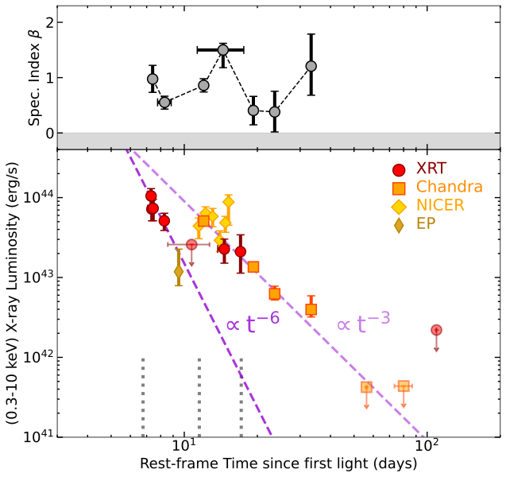
图注：下图：AT2024qfm的0.3–10 keV X射线光变，Swift-XRT为圆点、Chandra为方块、NICER为菱形、Einstein Probe为窄菱形。紫虚线为t^-3和t^-6衰减的示意参照；灰竖点线为NuSTAR观测时刻。上图给宽带谱分析约束的谱指数；灰色阴影表示Fν随频率上升的区域。
怎么看这张图：对照增亮与谱硬化，并看硬X观测是否覆盖该时段。斜率线用于引导读图，不是带置信区间的衰减指数拟合；不能把最初监测段写成爆发后前6天的完整记录。 核心X射线时间与谱形证据。
来源与置信度：arXiv HTML；source verified；https://arxiv.org/html/2611.28443v1/LumSpectralIndexXrays-24qfm.svg
图3
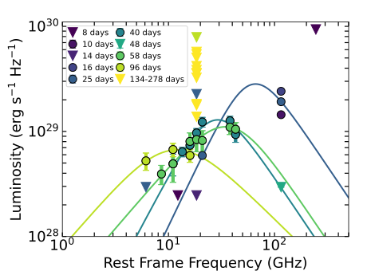
图注：合并JVLA、AMI、NOEMA与SMA的射电谱，覆盖源静止系约8–278天；倒三角为3σ通量密度上限，约134–278天的15 GHz限值来自AMI。实线是各历元最佳平滑折断幂律；约40与58天的SED特别相似。
怎么看这张图：先看峰由高频向低频迁移的总体趋势，再比较40.5/58.4天近乎重叠的曲线。模型峰参数是渐近交点，数据稀疏时跨历元固定斜率会影响半径反演。 射电停滞和多分量外流推论的直接观测依据。
来源与置信度：arXiv HTML；source verified；https://arxiv.org/html/2611.28443v1/spectrum-AT2024qfm-lum.svg
图9
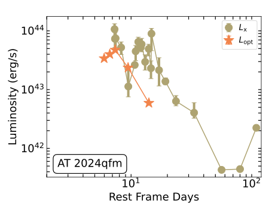
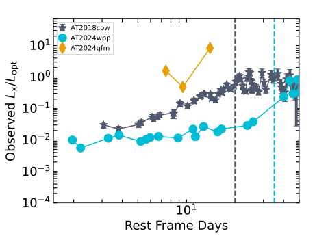
图注：左：AT2024qfm的0.3–10 keV X射线光度与由黑体拟合得到的UVOIR光度演化。右：qfm（橙菱形）、AT2018cow（灰星）和AT2024wpp（蓝圆）的X/UVOIR光度比。灰和青竖虚线标出cow与wpp出现几千km/s光学谱线的时刻，约为源静止系20和35天；qfm约7.4天已达到两种光度相当。
怎么看这张图：早期高比值表明可见X射线相对热光输出更强；只有在再处理供能、能带和几何条件下才映射为光深/效率。图中有限光度比不是独立的全局再处理率。 比较再处理环境的核心结果。
来源与置信度：arXiv HTML；source verified；https://arxiv.org/html/2611.28443v1/AT2024qfm-Lx-Lbol-withztf-paper.svg；https://arxiv.org/html/2611.28443v1/Lx-Lbol-ratio-withztf-paper.svg
图10
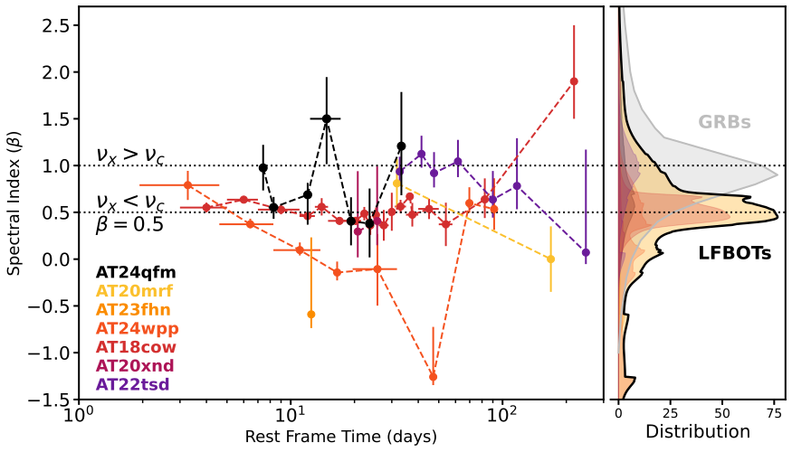
图注：左：可约束X射线谱指数的LFBOT演化，定义Fν∝ν^-β。水平点线给p约2时冷却频率以上的同步谱β约1及以下的β约0.5；多温度自由—自由冷却谱也可给β约0.5，而高于10 keV的单温度热轫致谱在软X段约β=0。右：LFBOT指数分布（黄）与GRB余辉分布（灰）比较；GRB样本来自更新的Swift光子计数模式谱目录。
怎么看这张图：LFBOT样本整体较硬，为不同冷却或发射机制提供线索。多历元/小样本选择和机制退化仍在，不能单靠β认定磁重联或中央引擎。 将个例放入同类高能机制检验，补充X/光比的几何信息。
来源与置信度：arXiv HTML；source verified；https://arxiv.org/html/2611.28443v1/PhotonIndex.svg
强相关工作
AT2018cow的多波段研究是本文判断X射线、光学和射电分区的直接参照，原引Margutti等2019年的链接为 https://doi.org/10.3847/1538-4357/aafa01 。AT2024wpp在相同分析体系中表现为较晚X/光等亮和更持久再处理，原引Nayana等工作的链接为 https://doi.org/10.3847/2041-8213/ae0b4d 。本文增加了相反方向的qfm实例，而不是仅将较亮事件替换进同一经验曲线；比较时仍需匹配历元、能带和样本选择。
Chevalier的1998年SSA反演建立了射电峰到R/B的经典关系，本文附录进一步明确冷却低于吸收峰时的填充因子依赖，原引链接为 https://doi.org/10.1086/305676 。在高能供能解释上，Metzger的WR/黑洞并合模型把再处理层放在中心供能源外侧（https://doi.org/10.3847/1538-4357/ac6d59），Govreen-Segal等则用非球对称星周激波与冷下游层解释cow（https://doi.org/10.48550/arXiv.2601.18887）。两种模型都能解释qfm较早透明的趋势，这正是本文尚未解决的物理退化，不应选取其中一种当成已确认前身。
同一事件 / 同类源线索：
相似工作：
基础理论 / 方法工作：
相反观点 / 张力线索：
6. The XRISM view of the front and rear ejecta dynamics in Tycho's SNR
- 来源：arXiv / astro-ph.HE
- 链接：https://arxiv.org/abs/2611.29910
- 作者：L. Godinaud, A. Decourchelle, R. Giuffrida, T. Tanaka, C. Badenes, G. Ferrand, J. Ballet, T. Holland-Ashford
- 公告 / 来源日期：2026-11-24
- 阅读层级：重点精读
- 评分：novelty 8/10，importance 8/10，relevance 8/10，final 9.00/10
- 推荐理由：XRISM五个指向和149像素首次独立分离Tycho前后侧多元素多普勒结构，测得速度/通量不对称及Fe相对Si/S分层，并结合Chandra自行重建三维动力学；直接揭示CCD质心混合了亮度和速度不对称，属于具体且显著的观测推进。全文需核验Gaussian分量、PSF混合、速度误差和三维几何假设，不能把爆炸模型讨论写成唯一前身识别。
中文题目：XRISM分开第谷遗迹的前后壳层：速度不对称、亮度偏置与元素分层
做了什么：第谷超新星遗迹在普通X射线CCD中常呈现“北侧蓝移、南侧红移”，但一条视线穿过朝向与背向我们的两层壳，未分开的谱线质心同时受到速度和亮度权重影响。作者利用XRISM/Resolve五个指向、约65%的投影覆盖，在1.75–7 keV内拟合15个谱线复合体；先分析整指向，再对149个像素分别检验单、双多普勒分量，以贝叶斯嵌套采样估计参数。
中央指向Si前、后侧速度为$-3320\pm60$与$3920\pm100\ \mathrm{km\,s^{-1}}$，Fe为$-2510\pm110$与$3330\pm120\ \mathrm{km\,s^{-1}}$，均为文中68.3%统计区间。后侧较快，而Fe比Si、S较慢；Si前侧贡献中央总线通量的$57\pm1\%$，且前后亮度比随天区变化。将各侧速度按通量重新加权，可重现既有CCD速度图的大尺度结构。新认识是把亮度不对称和真实运动分离；三维重建仍依赖自行、距离及前后横向速度相同的假设。
为什么重要：光谱分辨率提升改变了可辨识的物理量：过去一个质心代表的混合量，现在可拆成前侧速度、后侧速度和各自亮度。Fe内层较慢的运动分层，与影像中的Fe更居内相互支持，为热核爆炸的元素分层提供新的约束。它尚不能独自区分延迟爆轰和双爆轰，也不能把前侧更亮、更慢唯一归因于前身星周物质；爆炸初始不对称和遗迹整体运动仍可参与。
理论 / 观测 / 仪器方法价值：方法价值在于有控制地逐步增加复杂度：用现象学高斯线先分离运动，再用不太依赖温度、电离的Si Lyα作交叉核查，并以边缘像素的后验退化决定何处不该强行放两个分量。对于其他扩展高能源，同样要问谱质心是否混合多个物理区、分量归一化是否与速度退化、角响应是否把邻区信号混入。这里没有用一个全局线宽直接测出湍流。
为什么应该关注：第谷是粒子加速与激波环境研究的重要对象；热抛射物速度和外界密度结构有助于限定非热辐射所在的几何环境，但本文主体研究热谱线，不能由此给出宇宙线加速效率或伽马强子比例。值得继续跟踪的是前后速度与密度、电离状态的联合反演，以及Chandra空间信息和Resolve谱信息的联合响应建模；这比把高分辨谱图直接解读为完整三维质量图更可靠。
展开详细解读：文章讲解、背景、理论、重点章节、图表与相关工作
文章详细讲解
科学问题：年轻遗迹保存着爆炸分层，却已受到反向激波加热和外界介质减速。前、后壳层沿同一视线叠加，导致“某区域整体朝向我们”的CCD图像解释并不唯一。本文要逐元素测出两侧运动和发射量，再判断旧图中的不对称有多少来自亮度权重。
作者怎么做：在中央用每条线两个高斯分量描述前后壳，在边缘用一个分量描述切向穿过连续壳层的发射。相同元素的各线共用多普勒速度与前后归一化比，各元素独立；所有线再共享与能量成正比的展宽。这个简化降低了149个像素的计算难度，也把热等离子体复杂性留作明确的后续问题。
关键结果：Si和S两侧均比Fe快，且后侧速度绝对值较大；Si前侧在东北/北部更亮，向西南前后更接近，Fe则呈局部斑块式变化。图7的通量比例和图9重建质心对应，说明旧CCD蓝移既可能来自前侧亮度较大，也可能来自真实速度不同。只看一张红蓝色图无法分开二者。
局限与下一步：相同元素前后侧使用相同相对线强，隐含相近温度和电离状态；Ar、Ca又受弱线、邻线污染和参考能量影响。空间点扩散函数造成的谱混合尚未校正，三维速度图也不是三维密度图。需要非平衡电离模型、跨仪器空间联合分析以及更多方向覆盖，才能把运动学约束稳健地连接到爆炸与环境模型。
关键结果是怎么做出来的
第一步是确定采样范围。表1五个指向曝光为204、175、42、46与120 ks，来自PV和AO1，覆盖约65%的遗迹；北、南统计明显较低。数据保留高分辨率主级事件，剔除12号标定像素与不稳定27号像素。有效面积采用Chandra 1.75–7 keV影像生成，避免把扩展源误当点源；文中认为非X射线背景远低于相关谱线。
第二步将可见谱结构转成可拟合的参数。中央多元素线有明确双峰，边缘没有同样分离。高斯模型含15个线复合体、幂律连续谱和公共展宽，中央32个自由参数、单分量22个。速度取均匀先验，归一化取对数均匀先验；BXA嵌套采样既给区间，也显示某个分量是否实际没有被数据约束。
第三步用高统计中央谱建立基准。表3的Si后侧比前侧快约600 km/s，S差约580 km/s；Fe也有两侧差异且整体更慢。Si前侧总通量份额0.57、S为0.54、Fe为0.53，表明“后侧快”与“前侧亮”可以同时成立。它们不是相互矛盾的观测，也不是把同一速度误差重复计算。
第四步检验静止线能量的系统影响。附录A说明复合线质心随电离态改变；附录B单独拟合2.0061 keV的Si Lyα，得到前后$-3245\pm215$和$3597\pm354\ \mathrm{km\,s^{-1}}$。它与宽带结果一致，但速度绝对值差仅约352 km/s、误差较大，不能把这项独立检验写成高显著性确认了600–700 km/s不对称。其前侧通量份额$62\pm5\%$仍与主拟合一致。
第五步向空间扩展。对每个像素都拟合单、双分量，再检查C统计、残差、后验和归一化径向曲线。边缘若一个分量吸收几乎全部通量、另一分量速度退回先验，就采用单分量。图5显示Si/S与Fe的速度分层，图7显示前后比例的空间变化。像素不代表独立的理想细束视线，邻像素光子的混入仍在。
最后把Resolve结果投回CCD会测到的量，再结合Chandra自行。图9的加权质心与旧Si图一致，验证了亮度混合的解释；图10以3.5 kpc将1700个自行特征转为横向速度，在同一Resolve像素内取平均。改用3.2 kpc只使横向速度降低约8.6%，不改变独立的视线速度和通量不对称。这种分步比较把数据事实与三维几何假设分开。
展开背景、理论、公式、模型和章节导读
背景知识
第谷来自1572年观测到的正常Ia型超新星，是白矮星热核爆炸的遗迹。延迟爆轰和双爆轰等机制不仅预测不同元素产额，也预测铁与中等质量元素的位置关系。随着数百年演化，外冲击波扫过环境，反向激波从质量坐标上向内加工抛射物，因此今天看到的X射线只来自被加热并达到相应电离态的部分物质。
“铁在里面”不只是一张投影影像的结论。球壳投影会把外层也叠到中心，而不同元素在不同温度、电离时间下发光效率不同。用谱线多普勒运动测量前后侧，提供了独立于天球投影半径的另一维证据；但速度分层仍不能机械转换为爆炸时的全部物质分层。
普通CCD把几千km/s的多分量结构混在较宽的能量响应内。一个拟合出的质心可非常精确，却仍只是多个组分的通量加权平均。Resolve约5 eV的能量分辨率让中央前后侧的能移直接分开，因此新增信息主要来自分量可辨识性，不只是同一参数的误差缩小。
年轻遗迹中的几何还决定线型。指向中心时穿过分开的前后热壳；靠边缘时视线沿弯曲壳层穿行，速度连续分布并靠近天球平面。单、双高斯的选择因此同时取决于几何与计数。把没有分开的边缘线也强拆成两个壳，会产生无物理约束的速度，继而污染所谓三维图。
基础理论 / 方法脉络
多普勒测量需要先知道静止线能量。孤立原子跃迁能量固定，但Si Heα等观测峰是多个离子跃迁的组合，其权重随电子温度和电离时间变化。本文用AtomDB构建参考复合体：中等质量元素采用约1.2 keV和$2\times10^{10}\ \mathrm{cm^{-3}s}$，Fe参考能量6.427 keV来自适合铁富等离子体的条件。不能把同一热状态强行解释成所有元素都已实测一致。
通量与质量并不线性等同。热谱线发射通常涉及电子与离子的碰撞，密度较高区域即使质量不多，也可能非常亮；反向激波进入时间又影响电离程度。于是前侧更亮可以来自较密环境导致压缩，也可以来自初始密度或局部丰度差异。本文测量的是发射线归一化，而不是前后壳质量比。
同一元素多条线共用速度有利于积累计数，却需要它们确实追踪近似相同的等离子体。公共展宽进一步假设速度分散按能量线性映射。真实线型还包含复合线结构、热运动、多层宏观运动和角响应混合；中央约17–18 eV、边缘约20–24 eV的展宽，不能直接套成纯湍流速度或离子温度。
贝叶斯后验的作用是显示数据在所选模型内约束了什么。归一化消失的分量，其速度自然不可辨识；先验宽并不能把这部分信息创造出来。本文把后验诊断、空间径向连续性和残差一起使用，是比只追求更小拟合统计量更有物理内容的选择过程。
将视线速度与自行组合是在速度空间重建，而不是从谱直接知道每个气团的深度。横向速度需要距离；同一像素前后两侧的自行又无法由Chandra自动区分，本文假定相同。若要进一步得到真实三维位置，还需额外的流动历史或膨胀关系，这一步并未由本次测量直接完成。
公式与推导
以下除通量加权速度关系直接对应§5.1外，其余是为连接仪器、拟合与物理解释写出的标准教学表达，不是作者额外测出的量。取远离我们为正，非相对论近似适用于本文几千km/s的速度。
（1）从能量位移得到速度：
$E_0$是同一复合线采用的静止能量，$E_{\rm obs}$是观测峰能；蓝移能量升高，所以$v_z<0$。若静止能量偏差为$\delta E_0$，相应速度偏差量级为$c\delta E_0/E_0$，因此原子物理不能与运动学分开。
（2）复合线参考能量可写为
$\epsilon_j$是第$j$个跃迁的发射率权重，$\tau$单位为$\mathrm{cm^{-3}s}$。这说明单跃迁能量固定，不代表复合峰不随热状态变化；附录A的AtomDB计算正是控制这一环节。
（3）本文现象学谱的教学写法为
$Z$标记元素，$\ell$标记线复合体，$s$为前、后侧，$G$是单位积分高斯。共享的$v_{Zs}$让同一元素多条线共同约束运动；$I$是线光子通量，不能视为质量。
（4）真正拟合的是仪器通道计数而非无响应的谱：
$R_i$为能量重分布，$A_{\rm eff}$为有效面积，$b_i$为背景期望。本文生成RMF、ARF并在相关谱段忽略很弱的非X射线背景；这个近似不能普遍移植到弱源。
（5）计数模型的标准Poisson统计和后验关系为
零计数项取连续极限，$\theta$包括速度、归一化、连续谱和展宽。本文用BXA采样并检查C统计，但并未仅用一个统一的$\Delta C$阈值机械选择所有像素。
（6）定义前侧比例后，原文§5.1的关系成为
例如代入中央Si的$R=0.57,v_f=-3320,v_b=3920$，得到约$-207\ \mathrm{km\,s^{-1}}$。这是本解读用论文参数作的教学计算：明显不同的两侧运动可以产生很小的净蓝移，质心接近零不代表壳静止。
（7）若两侧接近对称运动$\pm v$，上式化为
即使真实两侧速率相同，前侧更亮也产生蓝移。相反若$R=1/2$但$v_b>|v_f|$，净质心呈红移。这直接解释为什么必须同时测亮度和速度，才能讨论南北不对称。
（8）宽度和三维速度的标准换算为
$\mu$用角秒/年、$D$用pc时$v_\perp$为km/s；本文公共展宽在2 keV处的18 eV对应约2700 km/s。这是混合线型的速度宽度，不能直接解释为湍流；三维模长则另外继承距离和前后相同自行的假设。
模型拟合 / 应用方法
输入与响应：分析窗口1.75–7 keV覆盖Si至Fe主要线，幂律描述主要由非热同步辐射产生的连续谱。每个指向与像素使用相应能量响应和有效面积；Chandra影像帮助构造扩展源ARF，却不等于已经纠正Resolve点扩散函数引起的空间谱混合。这两个仪器效应不能混称为同一项校正。
参数约束：各元素的前后多普勒位移独立，相同元素内各线共享位移；前后归一化均自由，但同元素不同线的前后比例绑定。公共展宽的能量指数固定为1，所有单线内禀宽度先设为零。这样中央模型共32个自由参数、单分量22个，得到的是可解释的一阶运动图，而非完整温度、丰度和电离历史后验。
选择模型：作者对149个像素都试单、双模型，结合残差、C统计和角落图检查。边缘双模型中若后侧通量趋零、速度区间回到先验宽度，额外分量没有数据支持；附录C据此转回单线。北、南靠近中心的部分像素也因低计数无法分两侧，因此“单分量区域”不一定代表前后壳不存在。
诊断与系统误差：S Heα在一些指向存在翼部正残差、线心负残差，表明膨胀壳速度分布比高斯更平；Mn、Cr未建模也留下结构。Ar、Ca的弱线受到邻元素污染，参考热状态又未经独立确定，不能将其看似更大蓝移当作精确元素序列。Si Lyα的独立检验支持宽带参数一致性，但更大的统计误差限制其独立显著性。
物理应用：比较前后元素绝对速度的均值可减弱共同参考能量误差，但前后若热条件不同，这种抵消不再成立。图11给出的Fe/Si约0.75是中央像素平均口径，不应直接拿表3整指向速度另算比值然后称复现。图10的横向速度以3.5 kpc标定，换3.2 kpc会下降8.6%；应报告这类可追踪的系统变化，再讨论局部环境减速，不能由圆形影像断言三维球对称。
重点章节 / 结果段落怎么读
-
§2与图1：先看五个指向的曝光和覆盖，理解为什么北/南不能像中央那样逐像素分离。把覆盖不足与某元素真的缺失分开。
-
§3.1及附录A：抓住“复合线参考能量”与“共享前后线强比例”两个定义，随后才读表3速度。这里决定哪些结论依赖热状态，尤其Ar、Ca。
-
§4.2与图5、7：同时读速度径向剖面和前侧通量比例，辨认Si/S的系统性与Fe的斑块性。单高斯绿色点只表示视线平均量，不等价于双分量的任意一侧。
-
§5.1与图9：将前后数据代入通量加权公式，这是文章重新解释CCD图的关键逻辑；不要把新旧质心相符误认为过去已测出了全部两侧信息。
-
§5.2–5.4及附录B/C：区分速度空间重建、元素分层和前身解释的证据层级。用Lyα误差和边缘后验退化检查强结论，最后再讨论爆炸模型。
关键图表与解读
图5
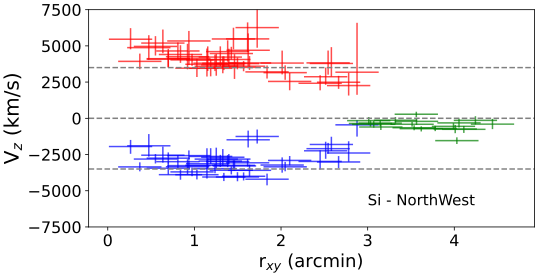
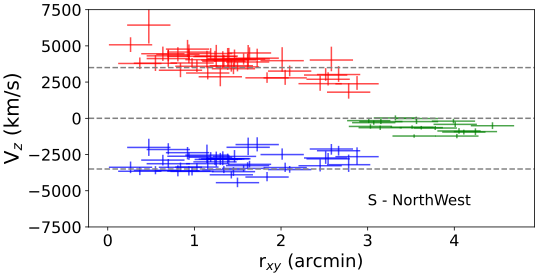
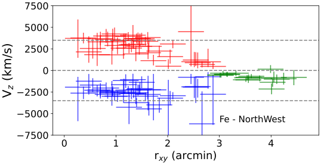
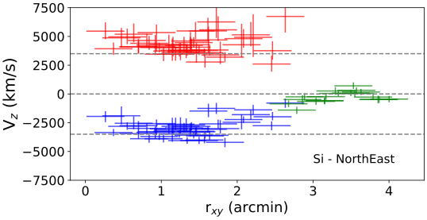
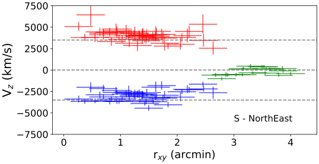
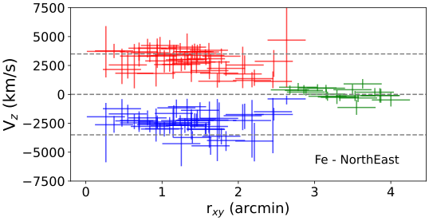
图注：中央至西北（上排）和中央至东北（下排）的像素视线速度径向剖面，左、中、右列分别为Si、S、Fe。蓝点和红点为双高斯模型的前、后侧，绿点为单高斯模型的视线平均速度；灰色水平虚线标出-3500、0与3500 km/s。
怎么看这张图：在相同投影半径比较两侧速度绝对值，并比较Fe与Si/S。边缘绿点不能当作前后之一；像素径向跨度和点扩散混合限制小尺度解释。 前后速度不对称和Fe较慢的直接证据。
来源与置信度：arXiv HTML；source verified；https://arxiv.org/html/2611.29910v1/Profile_Vz_Si_NorthWest.svg；https://arxiv.org/html/2611.29910v1/Profile_Vz_S_NorthWest.svg；https://arxiv.org/html/2611.29910v1/Profile_Vz_Fe_NorthWest.svg；https://arxiv.org/html/2611.29910v1/Profile_Vz_Si_NorthEast.svg；https://arxiv.org/html/2611.29910v1/Profile_Vz_S_NorthEast.svg；https://arxiv.org/html/2611.29910v1/Profile_Vz_Fe_NorthEast.svg
图7
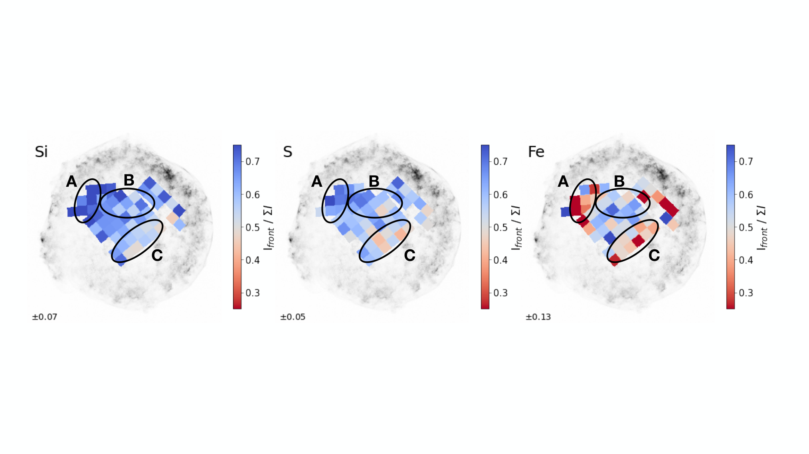
图注：Si、S和Fe（左至右）的前侧线归一化占前后总归一化的比例，仅显示双高斯能分离两侧的区域。图上标出正文讨论的A、B、C三区，各面板左下标示参数的平均不确定度。
怎么看这张图：0.5表示前后等亮，而非前侧为后侧一半。Si东北前侧占优，Fe更斑块化；比例图提供解释CCD质心偏置的权重。 亮度权重是独立于速度的新信息。
来源与置信度：arXiv HTML；source verified；https://arxiv.org/html/2611.29910v1/Carte_Ratio_Norme.png
图10
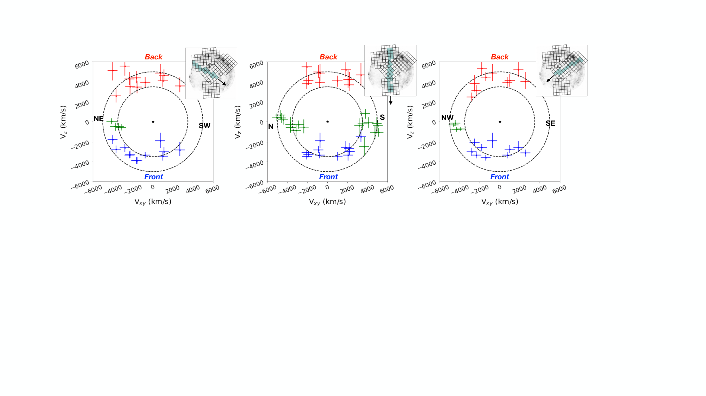
图注：沿右上示意图蓝线三个切面的Si速度空间重建。横向速度来自Chandra自行，视线速度来自Resolve；蓝、红点是双分量前后侧，绿点是边缘单高斯。以星号原点为中心的黑虚圆对应3500与5000 km/s球对称三维膨胀。
怎么看这张图：东北速度凹陷和前后不对称可分别辨认。虚圆只是参照；横向速度采用3.5kpc且前后共用自行，因此不是无几何假设的完整三维位置重建。 连接谱与自行并展示三维假设。
来源与置信度：arXiv HTML；source verified；https://arxiv.org/html/2611.29910v1/3D_reconstruction.png
强相关工作
Godinaud等2023年工作以Chandra影像分解和2003/2009年自行测量建立了1700个速度向量，是本文横向速度输入，也是北蓝南红图的直接比较对象。本文增加的是高谱分辨率下前后壳的独立速度与亮度，而非简单重复旧三维图；检索关键词可用“Tycho Poisson Optical Flow 1700 vectors”。参考链接：https://arxiv.org/abs/2309.01621 。
Hayato等2010年Suzaku分析在球对称、前后同速的条件下用展宽估计Fe与中等质量元素运动，本文保留Fe较慢这一方向，却解除前后同速假设。Buchner等2014年的BXA方法是采样与模型诊断的基础，原始应用对象为AGN，并不意味着本文也完成了全套物理模型比较；可信入口为 https://cdsarc.cds.unistra.fr/viz-bin/ReadMe/J/A%2BA/564/A125?format=html&tex=true 。对爆炸机制，本文引用的延迟爆轰与双爆轰模拟均可保持分层，真正有判别力的Ca分布当前仍受统计和原子谱复杂性限制。
同一事件 / 同类源线索：
相似工作：
（未提供）
基础理论 / 方法工作：
相反观点 / 张力线索：
（未提供）
7. Enhancing eccentricity through tidal resonance in binary neutron star systems
- 来源：arXiv / astro-ph.HE
- 链接：https://arxiv.org/abs/2611.31172
- 作者：Ivan Markin, Natalie Williams, Tim Dietrich
- 公告 / 来源日期：2026-11-24
- 阅读层级：重点精读
- 评分：novelty 8/10，importance 8/10，relevance 8/10，final 9.00/10
- 推荐理由：数值相对论显示初始准圆的高自旋双中子星可由逆行星f模持续共振产生后期偏心，并以共振锁定模型解释轨道角动量转移与自旋变化；提供区别于形成通道的偏心来源，改变偏心作为动力学形成证据的解释，机制显著且有模拟支持，可精读。须核验偏心幅度、收敛性和自旋/质量参数域，不能泛化为普通低自旋BNS。
中文题目：高自旋双中子星的潮汐共振能在并合前重新激发偏心
做了什么：一对已经近圆化的中子星，是否还能在没有第三天体的情况下重新变得偏心？本文用数值相对论演化一个等质量但自旋不对称的系统：两星质量均为1.35太阳质量，采用SLy状态方程，初始无量纲自旋分别为+0.5和−0.5，对应自转频率约895.5 Hz。逆行星的基频振荡模被自旋降低到并合前可与潮汐驱动匹配的频段，而顺行星未发生同样的共振。轨道角动量输入逆行星，使其负自旋向零靠近，并伴随轨道重新调整。
两种网格分辨率下，在约9—17 ms的调整阶段，偏心率从约 $7\times10^{-4}$ 增至 $4\times10^{-3}$，随后有回落和再增长。作者还提出“扫雪机”式共振锁定模型：自旋减弱使共振模频率上升，从而追随持续升高的引力波频率，解释了自旋随频率近似线性演化。该结果展示了一个特定高自旋系统的机制，不是普通双中子星的普遍预言；文中把晚期偏心等效回推为20 Hz处约0.1的数值，不能理解成模拟实际在20 Hz就有这样的偏心。
为什么重要：偏心通常被用作动力学形成渠道的线索，因为长期引力波辐射会使孤立双星圆化。本文提供的反例是：一个本来近圆的系统可以在晚期因内部潮汐角动量交换重新获得偏心。因此，仅凭晚期偏心倒推形成历史需要同时考虑高自旋潮汐过程。证据是两种分辨率的数值演化和共振锁定自旋模型，而不是对已观测引力波事件的新参数测量。
理论 / 观测 / 仪器方法价值：方法价值在于把轨道振荡、自旋变化和孤立星模频率标定连成证据链。单看波形频率加快难以区分普通潮汐、初始偏心或数值误差；同步跟踪局域自旋积分和固有距离偏心，并验证自旋依赖模频率，才能定位共振过程。简化模型解释自旋斜率，但作者明确承认它没有从第一性原理定量预测偏心增长，不能将两项结论混成一个闭合波形模型。
为什么应该关注：对于致密星和多信使源研究，值得关注的是强自旋系统中未建模的潮汐过程会怎样影响物质状态方程与形成历史推断。这里没有计算电磁或中微子辐射，重点是引力波源的内部动力学。后续应看低质量或不等质量系统能否在较小逆行自旋下进入相似状态，以及可观测波形是否真的能把这种晚期诱导偏心与原生偏心区分开。
展开详细解读：文章讲解、背景、理论、重点章节、图表与相关工作
文章详细讲解
科学问题源于两个频率都在变化。双星越接近，潮汐场的驱动频率越高；中子星自旋也会改变固有振荡频率。非旋转星的基频模通常在约1.5—2.2 kHz，往往到并合才可能接近。高逆行自旋把能够与轨道耦合的分支移向较低频，从而在数百Hz就打开共振窗口。
作者构造质量相同、自旋方向相反的双星，使只有一颗星进入这一窗口。初始条件用FUKA求解并降低初始偏心，再用BAM演化；两种主要分辨率的网格间隔为145 m和217 m。这样可以与此前两颗星同时共振、仍保持近圆的对称系统比较，检验单侧角动量交换是否会引起不同轨道响应。
核心结果是偏心增长与逆行星自旋改变出现在同一调整阶段。最初约9 ms，引力波频率沿近圆模板演化；随后出现频率振荡并比模板更快上升。偏心从约0.0007长到0.004，自旋先向零移动又短暂回调，之后整体持续向零移动。这个过程不是瞬间踢速，轨道辐射和潮汐交换同时作用，不能直接套一次角动量突变公式求得偏心。
共振锁定解释了为何过了一个窄频点后自旋还继续变化。逆行星吸收正向轨道角动量后自转绝对值下降，逆行分支模频率随之升高，又能追上不断啁啾的驱动频率；反馈维持近共振。线性模型能再现自旋—引力波频率斜率，但锁定起点受初始数据、数值耗散和模式频偏影响。本文是一个配置的机制展示，尚没有参数空间扫描、完整误差外推或探测显著性分析。
关键结果是怎么做出来的
首先控制初始系统。质量各1.35太阳质量，SLy分段多方状态方程给出单星潮汐形变参数414.4，自旋绝对值0.5，初始轨道频率163.4 Hz。二者的质量和形变率相同，只有相对于轨道的自旋方向不同，因此不同步的潮汐共振来自旋转分支，而非质量比这一额外变量。
其次建立相互独立的动力学诊断。局域自旋指标在随每颗星移动、半径12个太阳质量几何长度的控制球内积分流体角动量，以最初孤立星质量平方归一化；它近似反映自旋变化，并非严格守恒的准局域黑洞自旋。偏心由固有距离时间序列在7.5 ms滑动窗口测得，前5.5 ms因规范效应污染不展示。
图1的关键是时间一致性而非单一曲线起伏。高低分辨率均在约9—17 ms出现偏心增长；其后偏心短暂降到高分辨率约0.002、低分辨率约0.003，再增至约0.003和0.004。主结论的方向可重复，但晚期数值并不完全重合，所以不能声称已得到精确且分辨率无关的偏心预测。
接着用孤立星独立检验模频率的自旋依赖。图2演化自旋为0、0.25、0.375、0.5的受扰动孤立星，提取基频模谱峰，与已知准普适关系比较。它支持自旋幅值降低时相关模频率提高这一反馈前提；图2本身没有直接测量双星内每一时刻的模频率，也不能代替完整耦合模振幅分析。
图3将逆行星自旋对引力波频率作图，减少两种分辨率时间相位差的干扰。锁定在不高于约346 Hz开始，简单模型采用无量纲惯性矩12.18，给出近似相同的线性斜率。高分辨率曲线略偏离，初期呈阶梯状；作者将其解释为模频率一度跑在驱动前面、退出后又重新进入共振，这是解释而非已独立分离测得的多次模式跃迁。
最后读附录中的数值检查。高自旋初始数据带来从2660 Hz开始、3282 Hz附近最强的污染，作者对频率和自旋序列施加2660 Hz低通。附录另以193 m网格、180 Hz初始轨道频率比较HLL与HLLC求解器，保持单元中心网格，二者近似一致；锁定起点却变为约380 Hz。这支持持续共振的存在，也提醒其起始频率并非对初始设置不敏感的常数。
展开背景、理论、公式、模型和章节导读
背景知识
双星偏心表示轨道偏离圆形的程度。远离并合时，开普勒椭圆可以用一个明确的偏心率描述；强场数值相对论中则需选用距离或波形振荡的诊断量。不同定义在小偏心弱场极限应相近，但接近并合时不宜无条件视为同一严格轨道常数。
引力波辐射通常在近心点更强，长期演化倾向抹平轨道径向起伏。因此，一个在低频已处于孤立演化的双中子星，到地面探测器频段常被近圆模型描述。动力学俘获或三体作用可以保留较大偏心，但它们不是所有晚期偏心的唯一可能来源。
潮汐既能静态拉伸星体，也能激发其内部振荡。基频模是与整体形变密切相关、与轨道耦合较强的一类模式；共振要求外部驱动与模频率接近。旋转使原本简并的模分裂，顺转与逆转分支受到不同移频，因此高自旋星可能在非旋转星尚不能共振的轨道频率发生显著交换。
共振锁定在恒星和白矮星潮汐中早有讨论，核心是驱动和本征频率通过反馈共同演化。本文把这一图像用于高自旋双中子星：不是让轨道频率停止上升，而是让星体的频率也随自旋变化向上移动。所谓锁定不意味着完全恒定的频率差，更不意味着双星被固定在某一距离。
此前完全对称的两颗逆行星同时共振仍保持近圆，这为理解本文提供重要对照。若只说“轨道损失角动量就产生偏心”，便解释不了这个对照；必须同时处理能量、角动量和交换在两颗星之间如何分配。本文发现正是在这种不对称响应中出现新的轨道行为。
基础理论 / 方法脉络
在作者的频率约定下，潮汐驱动的主要四极成分与引力波频率对应。对逆行星，吸收与轨道同向的角动量意味着带符号自旋增大，却意味着自旋绝对值减小：从−0.5向零移动被称为自转减慢。这一点若不澄清，就会把正文中的“spin increases”和“spindown”误读成自相矛盾。
模频率的准普适关系用非旋转星频率作尺度，再用自旋频率比给出线性与二次修正。本文在探索范围内保留线性项获得解析斜率，以惯性矩近似连接角速度与无量纲自旋。准普适不是对任意EOS精确成立，且固定惯性矩忽略了随自旋变化的结构响应，因此这是简明解释模型，不是完全自洽的流体本征模演化。
锁定条件要求模频率和驱动频率保持一个小偏移。频率继续增加时，逆行角速度必须向零改变，才能使下降分支的模频率升高；这一反馈产生自旋随引力波频率近似线性的关系。模型把锁定起点作为输入，起点与孤立星初始模频率不同，不能把两者混同后说模型无任何自由选择。
偏心响应比自旋锁定复杂。对圆轨道，能量与角动量沿特定关系共同变化时仍可保持圆形；若交换不满足这一路径，才产生径向运动。本文在约346 Hz时引力波携出的轨道角动量约为潮汐转移的十倍，且潮汐转移并不单调，故必须联合考虑连续辐射、潮汐响应和轨道重新调整。
观测意义也有条件。如果用只有辐射圆化的模型把晚期偏心逆推，可能误得较大的低频偏心；这展示模型不完备的潜在偏差，并没有证明数据分析必然会识别出这里0.003—0.004的信号。探测器噪声、参数退化和共振波形需要另行评估，文中未执行这种注入恢复研究。
公式与推导
先建立频率与自旋记号。以下 $f_{\rm GW}$ 为引力波循环频率，近圆四极辐射满足（背景关系）
采用 $G=c=1$；质量同时代表长度/时间尺度。带符号角速度与自旋满足
这一步把频率反馈转成可与数值自旋指标比较的量；在本模型中 $\bar I$ 固定为12.18。
论文式(1)实际监测的局域指标为
$D=\rho W$ 是守恒静质量密度，$h$ 为比焓，$\gamma$ 为空间度规行列式，带横线速度为控制球平均，$(x_c,y_c)$ 为最小lapse位置。减去平动速度后提取围绕星心的角动量；固定分母质量意味着此量主要追踪角动量转移。
频率规范必须先澄清。已核查参考47的官方PDF第3页，其中写明共转系与惯性系模频率满足 $\sigma_c=\sigma_i+m_{\rm az}\Omega/(2\pi)$，$m_{\rm az}$ 为方位模指标。因此 $\sigma$ 是循环频率，$\Omega$ 是角速度；原文系数 $a_1^u=-0.193$、$a_2^u=-0.0294$ 本来就按这一数值规范拟合，不能直接移到全角频率比而不变系数。
为使后续推导统一，定义 $\omega_i=2\pi\sigma_i^u$、$\omega_0=2\pi\sigma_0$ 和 $\omega_{\rm GW}=2\pi f_{\rm GW}$，都用角频率。本文式(4)等价变为（代数换元，非重新拟合）
负的线性系数意味着降低自旋绝对值会提高这个模分支频率。二次项仍是原标定的二次项；本文“扫雪机”模型为了得到解析斜率忽略它，并非它严格为零。
把作者的小恒定循环频偏也换为 $\Delta\omega=2\pi\Delta\sigma$，锁定条件统一写成
线性近似下逆行星有 $|\Omega|=-\Omega$，故 $d\omega_i=-A_1d\Omega$；锁定时 $d\omega_{\rm GW}=d\omega_i$。积分得到
两边均为角速度，且 $A_1<0$，所以驱动频率提高使负的 $\Omega$ 向零移动。再用固定惯性矩连接得到
由于角频差和 $A_1$ 同时包含 $2\pi$，两式分别等价于论文用循环频率差书写的式(5)、(6)，没有改变预测斜率。这里检验的是图3中的自旋演化，不是直接预测偏心率。忽略二次项和固定惯性矩仍是近似，不能由直线吻合推断非线性模式响应已全部解决。
轨道方面，原文式(2)的开普勒关系为
$E<0$ 为束缚能，$L$ 为轨道角动量。为避免“变化量”与“移除量”混用，按带符号微分在初始圆轨道展开可写为教学式
若定义被移除的量为 $\Delta L=-\delta L$、$\Delta E=-\delta E$，才可改写为正文式(3)形式。二者必须保持同一能量符号约定；不能只取角动量损失而忽略能量响应。作者本人指出瞬时开普勒估算无法解释对称双共振仍近圆，故未把它作为偏心增长的定量解。
最后，标准Peters低偏心、仅辐射驱动关系可作为教学标度
它来自弱场辐射圆化，适用前提不包括这里正在发生的潮汐共振。文中“等效20 Hz处约0.1”是用此类无共振演化做的反事实比较，而不是一次真实历史重建。
模型拟合 / 应用方法
这里没有对观测数据做似然拟合，验证流程是初始数据求解、数值演化、诊断量提取与解析模型比较。FUKA构造已降低偏心的双星，BAM在两种网格间隔下演化；初始质量、自旋、EOS和轨道频率固定，因此不能从这一单配置推断参数空间里的发生比例。
局域自旋依赖控制球和速度平均定义，偏心则依赖固有距离的滑动窗口。作者不展示受规范扰动影响最强的前5.5 ms；对频率、自旋作2660 Hz低通以去除初始数据产生的高频污染。这些具体处理应随结果一起报告，因为它们意味着不能直接把全部曲线细结构当作独立的物理模式。
模频率先由四个孤立旋转星实验校核，再套准普适关系和惯性矩关系预测自旋—频率斜率。图3同时显示用FUKA初始角速度与BAM孤立松弛后的角速度计算的锁定模型；初始数据含残余差分旋转，松弛后角速度下降，导致预测共振起点变化。实际锁定在模频率之前开始符合有限频宽的共振图像，但本文没有给出完整起点后验或统计置信带。
两种主分辨率的增长趋势一致是稳健性证据，晚期偏心和自旋细节的差异则界定数值精度。仅两种分辨率不足以单独建立完整收敛阶和连续极限误差条；正文也未把结果包装为高精度观测模板。高分辨率与直线模型略偏离可提示更细的间歇共振，也可能要求更多参数与数值检查，当前不宜量化成新测得的锁定周期。
附录的HLL/HLLC比较隔离了求解器选择，保留单元中心网格这一共同条件；两者近似一致表明过程不只由某一个Riemann求解器制造。然而该组初始频率更高，锁定频率变到约380 Hz，因此它不是对全部主设置无差别重复。未来应用需系统变化EOS、自旋和质量比，并建立可和真实引力波模板共同检验的轨道与潮汐能量守恒模型。
重点章节 / 结果段落怎么读
-
“Physical setup”先固定1.35+1.35太阳质量、SLy和±0.5自旋，再读自旋指标式(1)。弄清负自旋增加代表自转减慢，才能读后面的反馈方向。
-
“Introduction of the eccentricity”结合图1，核对9—17 ms调整窗、滑动窗口定义和两种分辨率。增长并非单调贯穿全程，主结果是最初调整期产生偏心。
-
继续读式(2)—(3)后的反例说明。作者明确承认瞬时开普勒估计不能解释对称共振系统，因此不要把这两式当成已验证的偏心模型。
-
“Tidal resonance locking”连接图2与图3：前者标定自旋改变模频率，后者检验固定频偏、线性化和惯性矩近似下的自旋斜率，检查初始角速度来源的差异。
-
附录A、B以及Outlook一起读，分别限定高频滤波、求解器/初始频率效应和高逆行自旋系统的稀少性。它们决定能否把一个数值例子推广到真实总体。
关键图表与解读
图1
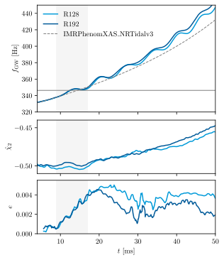
图注：上：两种分辨率R192、R128下引力波频率随时间演化，水平灰实线标出以持续自旋变化定义的锁定起始频率，灰虚线为该配置IMRPhenomXAS_NRTidalv3模型。中：共振中子星无量纲自旋指标随时间变化。下：轨道偏心随时间变化，最初约5.5 ms因固有距离的规范污染未画出。各面板浅灰竖带为产生主要偏心的调整时段；时间以毫秒、频率以Hz表示。
怎么看这张图：沿灰色调整窗同时看自旋与偏心：两种分辨率都出现增长，但后续偏心并不单调。图中的频率振荡和模板偏离应结合距离偏心诊断理解，不能单独当作实测引力波偏心。 直接支持单侧共振、自旋交换和晚期偏心增长的时间关联。
来源与置信度：arXiv HTML；source verified；https://arxiv.org/html/2611.31172v1/decspin_main_plot_stacked.svg
图3
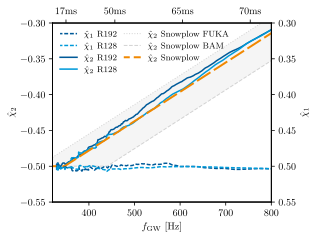
图注：两颗中子星的局域自旋指标随引力波频率变化，比较两种数值分辨率，并叠加共振星的“扫雪机”锁定模型。持续自旋改变所对应的锁定起点不高于约346 Hz。另绘出以初始数据FUKA及演化网格BAM中的初始角速度计算基频模频率后得到的模型预测；上轴标出对应模拟时刻。横轴频率为Hz，纵轴自旋指标无量纲。
怎么看这张图：重点比较逆行星自旋斜率与模型，而不是仅对齐起始频率。两种分辨率及FUKA/BAM初始角速度给出的起点有差异，模型成功主要在持续锁定阶段的趋势；顺行星作为不发生同样共振的对照。 检验共振锁定模型与数值自旋演化的核心关系。
来源与置信度：arXiv HTML；source verified；https://arxiv.org/html/2611.31172v1/decspin_spins_freq.svg
强相关工作
最直接的对照是Kuan、Kiuchi与Shibata的高精度潮汐共振模拟（参考文献48，https://arxiv.org/abs/2411.16850）：两颗星同时发生共振和自旋减弱，但保持近圆。本文采用自旋方向相反、仅一星共振的设置，增加了偏心增长这一不对称响应。对照说明本文并非首次发现中子星潮汐共振或共振中的自旋变化，其新增结果是这种特定非对称系统中出现的轨道偏心。
解析模型的基础来自Krüger与Kokkotas的旋转相对论星模频率准普适关系（文献47，https://arxiv.org/abs/1910.08370）和Breu与Rezzolla的惯性矩关系（文献16，https://arxiv.org/abs/1601.06083）。共振锁定的反馈概念也在白矮星双星研究中出现（文献18、19，https://arxiv.org/abs/1211.1393 与 https://arxiv.org/abs/1312.4966）。本文把这些关系组合成可与数值自旋斜率对照的简化模型，而不是从头计算所有非线性流体响应。
波形方面，文中以IMRPhenomXAS_NRTidalv3作为近圆参照（文献1，https://arxiv.org/abs/2311.07456），并指出高自旋数值误差预算和模型不足（文献49，https://arxiv.org/abs/2506.02115）。不能将相对模板更快的频率演化单独解释为偏心探测；必须同时包含潮汐自旋交换。本文未对GW200105重新拟合，相关低频偏心数值只是机制可能造成误读的比较。
同一事件 / 同类源线索：
相似工作：
基础理论 / 方法工作：
相反观点 / 张力线索：
（未提供）
相关简报
1. Search for Axion-like Particles using Blazar Observations with the HAWC Observatory
- 来源：arXiv / astro-ph.HE
- 链接：https://arxiv.org/abs/2611.30818
- 作者：HAWC Collaboration, R. Alfaro, C. Alvarez, A. Andrés, E. Anita-Rangel, M. Araya, J.C. Arteaga-Velázquez, D. Avila Rojas
- 公告 / 来源日期：2026-11-24
- 阅读层级：相关简报
- 评分：novelty 7/10，importance 8/10，relevance 10/10，final 9.40/10
- 推荐理由：联合约3000天HAWC及HESS/MAGIC/VERITAS七个BL Lac能谱，用CLs得到neV质量ALP的约4.6–5.5×10^-12 GeV^-1排除，对甚高能传播和IACT联合分析直接有用；无显著信号，排除几乎由PG1553+113主导且EBL系统学改变排除面积约-36.5%至+32.6%。适合高价值简报，非简单耦合上限、非多源共同发现，全文核查磁场/红移/本征谱假设与既有界限。
中文题目：HAWC与IACT联合限制类轴子：排除区由PG 1553+113主导
问题、方法与结论：光子在源区和银河磁场中可与类轴子粒子（ALP）相互转换，使部分甚高能辐射绕过河外背景光的吸收。作者联合约3000天HAWC数据与七个BL Lac的IACT能谱，以低能谱约束本征幂律，再将传播概率与仪器响应卷积。结果没有显著ALP信号：扫描后的全局p值为0.31；95% CLs排除在质量约6–9 neV处最低达到耦合4.6×10⁻¹² GeV⁻¹。
意义与贡献：新分析使用HAWC逐像素泊松似然及完整响应，而非公开单点通量近似；625个参数格点分别用伪实验校准，处理零假设下质量不可辨识的问题。联合排除181格，PG 1553+113单独排除178格，因此这是预先固定七源样本的联合结果，但增益几乎由一个高红移源决定。
可借鉴之处：可借鉴的是把本征谱干扰参数逐点重新拟合，并以CLs避免在低灵敏度区域过度排除。ALP转换随耦合振荡，低质量下排除区不连通：所报数值是最低被排除耦合，不代表所有更大耦合均排除。图中应保留空洞，不能只画一条单调上限。
局限与关注点：结论依赖多TeV本征幂律外推、采用的红移与磁场；IACT点被视为独立并采用10%高斯能散近似。EBL模型使排除面积改变−36.5%至+32.6%，这是面积变化而非耦合误差。PG 1553+113红移采用模型确定的下界，团磁场多为通用假定；这些限制需要与统计排除同时阅读。
图3
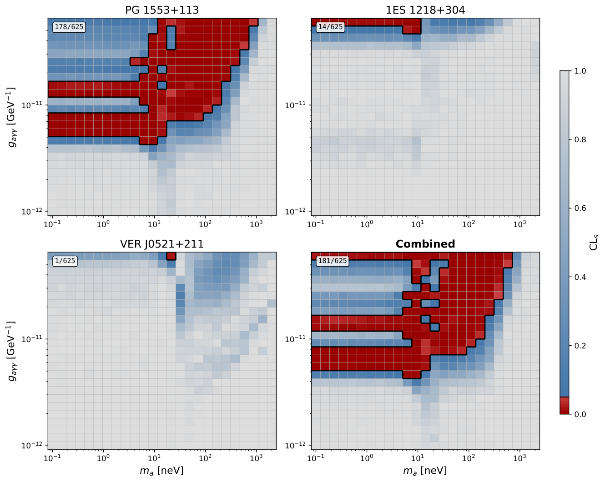
图注：横轴为ALP质量、纵轴为光子耦合；四面板分别为PG 1553+113、1ES 1218+304、VER J0521+211及七源联合。格点颜色表示CLs，红格满足CLs小于0.05，黑线为格点化排除边界；插图给625格中的排除数，联合为181格。
怎么看这张图：比较PG 1553+113与联合面板，检查新增和消失的红格。低质量空洞意味着不能把最低耦合边界当成连续上限；格点面积也不等于参数的概率。 直接支持核心结论及其统计解释
来源与置信度：arXiv HTML；source verified；https://arxiv.org/html/2611.30818v1/likelihood_surface.png
2. Photomeson-threshold origin of the TeV break in astrophysical neutrinos: Spectrum, flavor, resolved sources, and the ultrahigh-energy landscape
- 来源：arXiv / astro-ph.HE
- 链接：https://arxiv.org/abs/2611.28037
- 作者：Vernon Barger
- 公告 / 来源日期：2026-11-24
- 阅读层级：相关简报
- 评分：novelty 7/10，importance 7/10，relevance 10/10，final 9.05/10
- 推荐理由：将约30 TeV中微子折断解释为pγ阈值并给谱参数到靶光子场的解析反演、折断展宽及源间一致性约束，提出可用能谱/味组成/红移分布检验的具体联系；摘要声称无剩余自由度和共同暗弱源群须重点核查，红移卷积、Δ近似、数据拟合及各已解析源靶光子反演不能视为无模型测量。 全文复核降档：固定BPL形状且无完整似然协方差；分箱比展宽约束粗，误差处理影响上限；源群排除依赖单事件特征能量等假设，仅条件性诊断。
中文题目：中微子约30 TeV折断的光介子解释：源群一致性约束仍依赖简化拟合
问题、方法与结论：作者沿用质子与软X射线发生光介子反应的解释，将IceCube弥漫谱约30 TeV折断对应到靶光子低能尺度。对截断幂律靶场，质子指数由高能谱斜率决定，低能斜率差反映反应概率随能量的增长；假定平均红移约1，种子尺度约0.13 keV。论文进一步对公开分段通量作展宽拟合，报告总宽度68%上限0.235 dex，扣除假定源演化带来的红移展宽后，种子尺度离散约不超过1.5倍。这是模型条件下的一致性上限，并非逐源温度测量：拟合固定谱形参数、未使用完整似然及协方差，改动近零通量点的误差处理便放宽至约1.7倍。
意义与贡献：有价值的增量是把折断宽度、能量相关的源红移分布和Glashow共振事件率连成可检验的诊断。低能相对受抑的谱形确实不能由正权重、不带折断的幂律简单叠加制造，但这不唯一证明光介子起源；对其他有特征能量的机制仍需比较。
可借鉴之处：可借鉴“单源形状—宇宙学卷积—群体离散”的前向建模。实际应用应联合拟合谱斜率、折断、靶场形状和源演化，并用仪器完整响应/似然评估展宽。本文的解析反演适合组织假设；不能把假设平均红移与靶场之后得到的尺度称为无自由度的源物理测定。
局限与关注点：对中微子与伽马联合研究，透明的质子—气体高能分量及电子反中微子比例值得追踪，但该分量归一化由高能数据设定，并非冕模型预言。单个TXS或KM3事件能量不是源谱折断，也不能独立确定靶场；因而“已解析源不能组成弥漫源群”及“必须另有暗弱Seyfert群体”应保留为条件性推断。
图4：折断展宽与公开分段通量
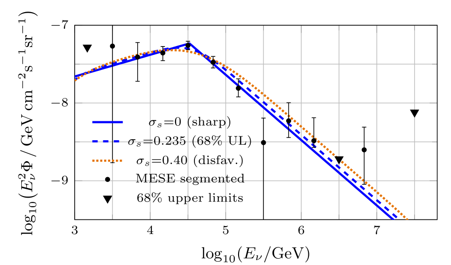
图注：图4：用于展宽上限的折断幂律拟合与官方MESE分段通量比较。横轴为中微子能量/GeV的十进对数，纵轴为能量平方加权通量的十进对数，通量单位为GeV cm⁻² s⁻¹ sr⁻¹。点与误差线为各能段归一化及1σ误差，向下三角为68%上限。实线为零展宽折断幂律，虚线为总对数展宽0.235 dex（68%上限），点线为0.40 dex。前两条曲线近乎重合：0.33 dex宽的能段无法分辨更窄展宽，因此约束是一致性上限，非展宽探测；0.40 dex曲线将折断下方峰顶抹平，较不受数据支持。
怎么看这张图：图4直接展示主要新约束：零展宽和0.235 dex曲线几乎重合，而0.40 dex曲线削平峰顶。重点读图中的0.33 dex分箱与误差，不能把看不分开的两条曲线解释为已测得内禀宽度；其统计强度还受固定谱形及近零点处理影响。 直接展示本文主要新增群体一致性约束及其分辨率限制。
来源与置信度：arXiv official PDF figure crop；source verified；https://arxiv.org/pdf/2611.28037#page=7
3. On the Sensitivity of Fermi-LAT Maximum Likelihood Stacking
- 来源：arXiv / astro-ph.HE
- 链接：https://arxiv.org/abs/2611.28040
- 作者：Owen K. Henry, Timothy A.D. Paglione, Joshua Tan, David Zurek, Thyra Eysselinck
- 公告 / 来源日期：2026-11-24
- 阅读层级：相关简报
- 评分：novelty 7/10，importance 7/10，relevance 10/10，final 9.05/10
- 推荐理由：针对Fermi-LAT阈下源叠加，以等样本控制场标定约5σ分离所需ΔΣTS约70，直接服务群体高能分析并讨论对应个源分布；是有用统计标定而非普适发现阈值，全文须核对N依赖、控制场匹配、背景非平稳性及试验因子，不能直接套用所有目标样本。
中文题目：Fermi-LAT阈下源叠加：控制场决定显著性标定
问题、方法与结论：单个源弱于探测阈值时，可以累加各观测区域的对数似然比TS，寻找源群体的整体辐射。本文用高银纬真实控制场与合成点源比较，测试50至200个目标、每25个一组；在作者采用的KL散度标定下，约70的累计TS差对应所称5σ分离。它是特定模拟设置的经验结果，不能作为通用发现阈值。
意义与贡献：控制场的TS分布偏离理想零假设分布，说明未建模背景会累积进入叠加信号。只把总TS开平方容易高估群体证据；研究的价值是把问题转向与同规模控制场的比较，并检查信号由少数较亮目标还是整体群体贡献。
可借鉴之处：作者采用泊松像素、每像素20个均匀背景计数、半高全宽0.5度高斯点源和幂律源强分布；每参数格生成一万个源，再抽取目标数并重复1000次。可将这套注入—控制比较用于实际群体，但须按能量、曝光、纬度与背景条件重新模拟；不能直接搬用70。
局限与关注点：全文只有短方法说明与一幅图，没有完整给出KL散度到极小尾概率的独立校准。文中把TS称为贝叶斯统计量也不准确，本文按似然比统计量解读；源强幂律符号与抽样实现需要复现核对。大样本偶有TS超过25的单源，提示叠加选样与亮端裁剪应事先定义，不应事后解释为全体共同辐射。
图1
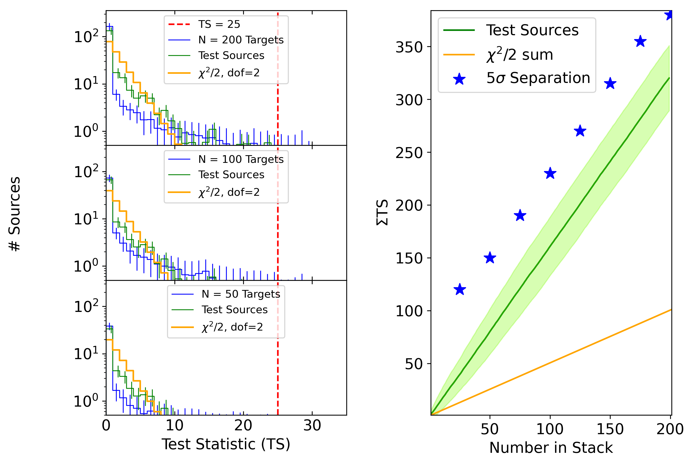
图注：左侧给目标数50、100、200的部分合成目标TS分布，并以绿色控制场和橙色理论零假设分布比较。右侧给不同目标数下控制场与理论零假设的累计TS；蓝星表示作者标定为相对控制场5σ分离所需的合成目标累计TS。
怎么看这张图：先看控制场与理论零假设的偏移，再比较右侧蓝星与控制场曲线的距离。蓝星依赖本文注入模型和显著性转换，不是可直接用于另一源群的固定发现阈值。 直接支持核心结论及其统计解释
来源与置信度：arXiv HTML；source verified；https://arxiv.org/html/2611.28040v1/stack_sens4panel_0501.png
4. Interpreting the $γ$-Ray Emission of the Cygnus X region with a Combined Cygnus OB2 and Cygnus X-3 Scenario
- 来源：arXiv / astro-ph.HE
- 链接：https://arxiv.org/abs/2611.30284
- 作者：Caijin Xie, Zhihao Ouyang, Yudong Cui, Lili Yang
- 公告 / 来源日期：2026-11-24
- 阅读层级：相关简报
- 评分：novelty 7/10，importance 7/10，relevance 10/10，final 9.05/10
- 推荐理由：以OB2、Cyg X-3与银河CR联合强子模型解释天鹅座多波段发射并提出GeV中微子检验，直接涉及PeVatron及中微子重点，具有可借鉴的多源分解；摘要未给模型选择统计或成分退化约束，只能按有用新解释7分。全文必须核验其所称LHAASO调制PeV信号的实际能段、统计/引用与OB2单源不成立的假设，不能把拟合可行性写成来源证明。
中文题目：天鹅座伽马辐射的多源强子解释：OB2、银河宇宙线与X-3的叠加
问题、方法与结论：天鹅座同一天区叠加了约1.46 kpc处的OB2星协和约9 kpc处的X-3双星。作者求解球对称稳态质子输运，将星协风终止激波、银河宇宙线以及X-3的核心和逃逸晕辐射相加。在选定气体密度与受抑制扩散系数下，前两项缺少百TeV以上通量；加入X-3后可重现整区GeV至PeV能谱。X-3质子截断固定为50 PeV，核心平均通量取高态的一半，逃逸比例取0.5%或0.9%，并比较质子碰撞和光强子两种核心通道。结果是条件性的谱解释，未提供排除其他加速机制的统计模型选择。
意义与贡献：工作把不同距离的发射分量分开处理，说明整区的高能谱不能直接归给星协。两类核心机制在伽马波段退化，却预测不同GeV中微子通量，可作为多信使检验；这不是已有中微子探测。
可借鉴之处：可借鉴的是同一输运方程下分别改变注入和边界条件，再将各分量的伽马与中微子预言保持一致。图5展示叠加谱，图6给出单味中微子预测；实际观测需同时检查形态、时间状态和空间模板，扩展源不能直接套用点源灵敏度。
局限与关注点：原始LHAASO论文报告的轨道调制只有3.2σ证据，不能称确证；它与月变8.6σ、源检测约10σ是不同统计问题。本文的结论还依赖稳态、慢扩散和固定气体分布。式12的靶光子积分下限及式24对数指数符号存在书面自洽疑点，未核实计算实现，定量复现前须澄清。
图5
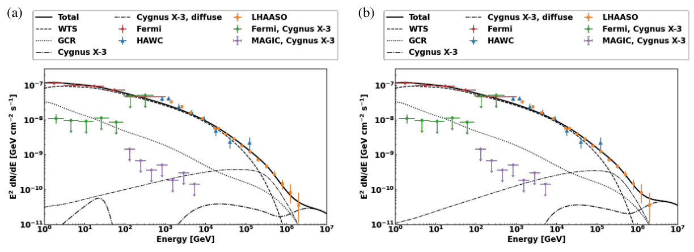
图注：天鹅座整区伽马能谱与观测比较。(a)、(b)分别采用X-3核心的质子碰撞加紫外光强子通道，以及X射线光强子加紫外光强子通道。虚线、点线、粗点划线与细点划线分别表示OB2风终止激波、银河宇宙线、X-3核心与X-3弥散辐射，实线为总和。观测点与图4相同，包含Fermi-LAT、HAWC、LHAASO以及X-3的Fermi-LAT/MAGIC约束。
怎么看这张图：几百TeV处逃逸晕填补仅加核心仍留下的缺口。两面板都可描述谱，说明核心通道尚退化；曲线贴合不等于各分量被独立测定。 联合分量模型的核心结果与通道退化。
来源与置信度：arXiv HTML；source verified；https://arxiv.org/html/2611.30284v1/Fig5.png
图6
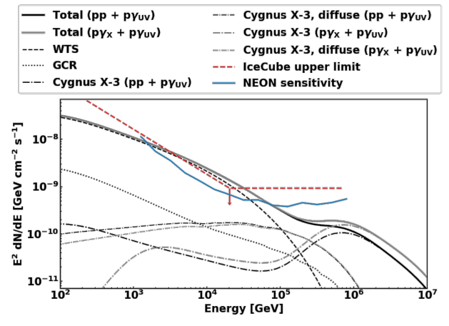
图注：天鹅座模型中微子能谱。黑虚线和点线为OB2与银河宇宙线；粗、细黑点划线为质子碰撞加紫外光强子方案下X-3核心和弥散分量，灰色相应曲线为X射线光强子加紫外光强子方案；黑、灰实线为总和。红虚线为文中采用的IceCube十年2HWC J2031+415限值；蓝实线为3500米布设深度的NEON缪中微子3σ灵敏度。正文说明模型按单味给出。
怎么看这张图：低能端核心通道差异提供判别思路。整区扩展辐射与点源限值/灵敏度并非天然可比，越过灵敏度不等于确定探测。 多信使预测及其点源/扩展源比较边界。
来源与置信度：arXiv HTML；source verified；https://arxiv.org/html/2611.30284v1/Fig6.png
5. A Log-Normal Timing Likelihood for Direction Reconstruction of Ultra-High-Energy Gamma-Ray Air Showers
- 来源：arXiv / astro-ph.HE
- 链接：https://arxiv.org/abs/2611.30504
- 作者：Jun-Yu Shen, Yi Zhang, Jia-Yin He, Xing-Yu Li, Shi-Ping Zhao, Qiang Yuan
- 公告 / 来源日期：2026-11-24
- 阅读层级：相关简报
- 评分：novelty 7/10，importance 7/10，relevance 10/10，final 9.05/10
- 推荐理由：利用CORSIKA的远轴正偏到时分布构造对数正态方向似然，纳入单探测单元多粒子触发，并比较锥形/抛物面拟合及独立读出；对宽展布多PeV空气簇射有直接方法价值，适合简报。摘要未给改善百分比和实测验证，暂不将方法增量升为显著推进，全文须核实基线公平性与探测器响应。
中文题目：用对数正态到时似然改善稀疏空气簇射阵列方向重构
问题、方法与结论：远离簇射轴的粒子到时分布宽且右偏，常用波前拟合会压低这些测量的权重。作者模拟10万条100 TeV—30 PeV伽马簇射，加入GEANT4液闪响应与3 ns时间抹宽，在75 m站间距、每站四单元的阵列中保留约4.8万事例。新似然直接描述偏斜到时，并用最早到达粒子的顺序统计处理多粒子触发。触发站数超过100时，68%包含角为0.178±0.003度，对照锥形与抛物面拟合的0.278±0.004度、0.269±0.004度，误差仅为自助法统计误差。
意义与贡献：改进来自更充分利用远轴时间信息，对未来大面积稀疏阵列有直接价值。各触发站数区间均优于两种基线；独立单元读出相对合并到整站另改善约4.6%—12.3%。文中约1.5倍“灵敏度增益”来自角分辨率比的代理推算，不是加入宇宙线背景后的完整点源探测分析。
可借鉴之处：可借鉴的是为触发的最早时间建立概率模型，而非把它当作单粒子平均到时。有效粒子数由沉积能量相对MIP能量估计；每个试探方向重新估计时间零点和径向分布参数。复用时应保留同一事件、同一单元输入的基线比较，并检验低多重数事件的分布拟合稳定性。
局限与关注点：本文使用真实核位，尚未传播实际核位重构误差；只模拟伽马、将多粒子到时近似为独立抽样。只纳入正时间残差，零点采用投影时间的2%分位数，均属经验处理。结果是特定阵列与响应下的方法验证，联合拟合核位和方向、背景筛选及真实数据验证仍待完成。
图6
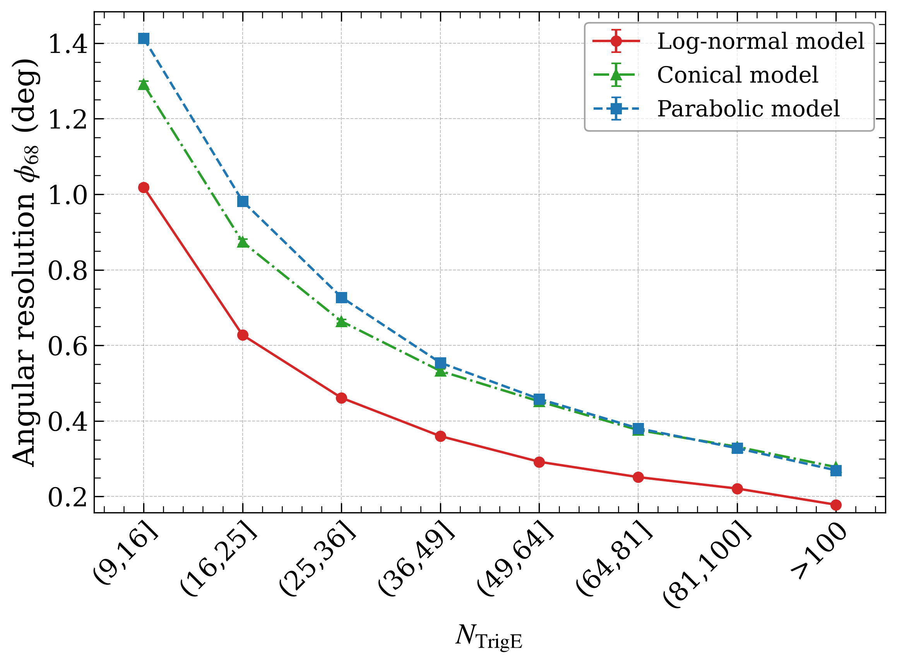
图注：三种方向重构方法的68%包含角随触发探测站数变化：红色圆点为对数正态似然，绿色三角为锥形波前，蓝色方块为抛物面波前；纵轴为角度。误差条表示68%自助法置信区间，数值表采用500次重采样估计统计不确定度。
怎么看这张图：比较同一触发站数下的红点与两种波前拟合，红点始终较低；最高多重数区约0.178度。横轴是触发站数而非固定初级能量，误差条只反映模拟样本统计，真核位假设仍未解除。 直接展示同一输入样本上三种方法的方向性能。
来源与置信度：arXiv HTML；source verified；https://arxiv.org/html/2611.30504v1/angular_resolution_comparison.png
6. The Sensitivity of Gamma-Ray Searches for Dark Matter Annihilation in Milky Way Dwarf Galaxies: the LSST Era and Beyond
- 来源：arXiv / astro-ph.HE
- 链接：https://arxiv.org/abs/2611.31130
- 作者：Ilumi Chavez, Aditya Ghosh, Chris Kelso, Dan Hooper, Alex Drlica-Wagner, Ethan O. Nadler
- 公告 / 来源日期：2026-11-24
- 阅读层级：相关简报
- 评分：novelty 7/10，importance 7/10，relevance 10/10，final 9.05/10
- 推荐理由：BabyBison把卫星星系模拟、选择函数与伽马联合似然连通，量化LSST新增卫星通常只使湮灭限制改善不足20%，主要增益来自少数高J因子系统；对间接探测观测策略有直接参考价值，适合简报。属于预报而非新限制或发现，TeV质量前景需全文核验通道、仪器假设、J因子及罕见实现分布，创新/重要性保留7分。
中文题目：LSST增加矮星系数量，暗物质伽马约束未必同比改善
问题、方法与结论：作者建立BabyBison，把银河卫星模拟、光学选择函数、暗物质密度平方积分J因子和伽马计数联合似然连接起来，比较同一模拟实现中LSST前后的目标集。两套宿主模拟均显示，新增目标使典型湮灭截面上限改善不足20%，远小于按数量平方根估算的增益；少数出现高J近邻系统的实现却能显著改善灵敏度。
意义与贡献：这把“发现更多矮星系”与“找到更有统计权重的暗物质靶源”分开。SMW模拟中LSST前后目标数约42至104，MWest约35至81，但联合限制主要由少数高J对象驱动。卫星总数和宿主质量并不能替代对这些对象距离、尺度及暗物质含量的测量。
可借鉴之处：方法上在同一卫星总体实现内成对比较前后目标集，直接统计上限之比；背景还考虑未分辨点源引起的非泊松计数涨落。报告中位收益和68%、95%实现范围，比只用一条平均灵敏度曲线更适合评价光学发现对伽马观测的价值。
局限与关注点：这些是模拟预报，非新数据上限。J因子由光度、距离、半光半径经验关系及0.27 dex散布赋值；MWest未重新标定星系—晕关系，近邻固定0.5度孔径和未知J系统误差仍有限制。所谓完整样本还移除了极暗、半径小于10 pc的选择，不能当成LSST必然达到；扫描质量后的全局发现显著性也未计算。
图6
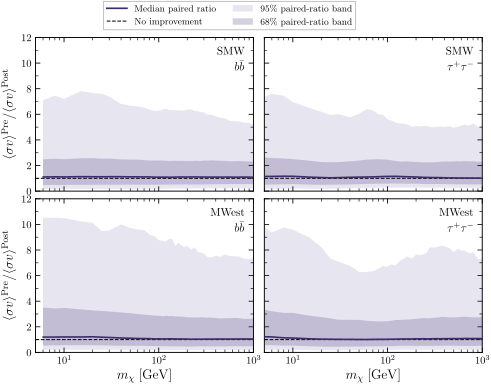
图注：横轴为暗物质质量，纵轴R为同一模拟实现中LSST前的95%截面上限除以后者，R大于1表示改善。左右列为b夸克与τ轻子湮灭通道，上下行为SMW和MWest；紫实线为成对比值中位数，深浅阴影包围中央68%和95%的模拟实现。
怎么看这张图：中位线接近1与很宽的上侧阴影应一起看：多数实现增益小，少数高J发现贡献长尾。上限的下降比例是1−1/R，不能把R直接写成改善百分比；阴影也不是一次观测的参数置信区间。 直接支持核心结论及其统计解释
来源与置信度：arXiv HTML；source verified；https://arxiv.org/html/2611.31130v1/fig6.svg
7. Tearing stability of pulsar equatorial current sheets
- 来源：arXiv / astro-ph.HE
- 链接：https://arxiv.org/abs/2611.28057
- 作者：Ioannis Contopoulos, Spyros Rigas
- 公告 / 来源日期：2026-11-24
- 阅读层级：相关简报
- 评分：novelty 8/10，importance 7/10，relevance 9/10，final 9.00/10
- 推荐理由：提出全局脉冲星拓扑引入的法向磁场会改变赤道电流片撕裂稳定性，并用耗散边界/PINN展示两类磁层配置，直接挑战局域Harris结果的外推；摘要明确为初步解，真实Lundquist数下的稳定性结论需核查碰撞less闭合和全局三维可实现性，不提前计作已确立的显著推进。
中文题目：法向磁场能否稳定脉冲星电流片？全局边界条件给出两类初步解
问题、方法与结论：局域Harris电流片通常没有系统性的垂直穿片磁场，但脉冲星南北半球的磁力线重接后可以形成这种法向分量，其张力可能阻止撕裂产生磁岛。作者把既有法向场稳定条件与全局无力磁层的电磁关系相联，提出在很高Lundquist数（磁输运与扩散时间尺度之比）下，典型重联率对应的法向场足以抑制撕裂。再由流入坡印廷能流与粒子电加速做功平衡构建耗散边界，用物理信息神经网络求解：在倾角20度、极帽36度及片内粒子倍数5的示例中，得到近理想态和强耗散态；后者在1至3个光柱半径内耗散约一半自转损失功率，自转损失功率约为CKF基准的90%。这些是初步稳态计算值。
意义与贡献：文章提醒：没有磁岛不等于没有粒子加速，也不能只凭局域重联率指定整个磁层的耗散。法向场同时受全局拓扑、电流闭合和边界供能约束，两类解为脉冲星状态切换提供待检验的解释，但尚未演示两态之间的动态转变。
可借鉴之处：值得借鉴的是先把全局电磁约束传给电流片，再验证局部稳定性。对全局PIC结果，应直接测量法向场和有效扩散率，做受控分辨率序列；仅以趋肤深度估计数值Lundquist数不足以证明已有磁岛全是数值产物。
局限与关注点：对脉冲星高能辐射模型，本工作提示粒子供给与全局拓扑可能改变耗散位置。关键限制是经典撕裂条件尚待相对论无碰撞实验检验；PINN损失函数、收敛和稳定性细节留待后文。50%耗散及双态不能写成已验证的普适磁层行为，更不能据此否定PIC的全部高能辐射结果。
图1：两类初步全局磁层解
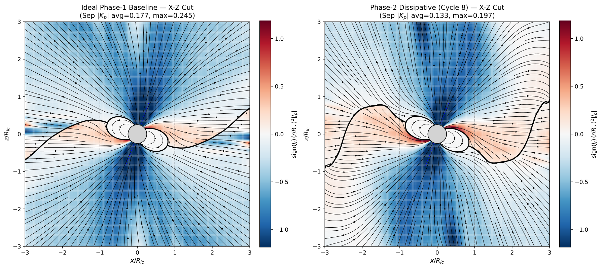
图注：图1：两类代表性的初步物理信息神经网络解，参数为恒星半径等于0.25个光柱半径、磁倾角20度、极帽张角36度、粒子倍数k=5。左图为赤道电流片耗散可忽略的CKF式解，右图为具有强赤道耗散、按本文判据可抗撕裂的解。色图在同时包含自转轴和磁轴的x–z平面显示极向电流密度乘半径平方，并用径向电流的正负号赋号；粗黑线表示极向电流密度形式上无穷大的理想薄电流片。颜色并非辐射强度，图中未展示时间演化。
怎么看这张图：图1左右是同一组示例参数下两类初步磁层解，颜色标示带符号并按半径平方缩放的极向电流密度，粗黑线是无限薄电流片。应比较电流如何闭合及片的形状，不把颜色直接当辐射亮度，也不从两个静态面板推断动态切换或两支解的稳定性。 唯一直接数值结果展示，说明两种电流闭合几何及其初步性质。
来源与置信度：arXiv HTML；source verified；https://arxiv.org/html/2611.28057v1/Jp.png
8. Is the learner or the summary the limit? Auditing machine-learning energy reconstruction for air-shower arrays on KASCADE and GRAPES-3
- 来源：arXiv / astro-ph.HE
- 链接：https://arxiv.org/abs/2611.29363
- 作者：Mugdha Raje Ashiya, Samarjeet Malik
- 公告 / 来源日期：2026-11-24
- 阅读层级：相关简报
- 评分：novelty 8/10，importance 7/10，relevance 9/10，final 9.00/10
- 推荐理由：跨三种强子模型和KASCADE/GRAPES-3审计把模型容量、拟合摘要的信息损失与站点信息分开，给出距估计误差底2.2%及真粒子数替代后方差损失70–72%等可操作量化结果，对空气簇射重建有直接借鉴价值；底值只是校准仍欠覆盖的估计，真实数据无能量标签，不能称证明Bayes下界或完成能标验证，按方法简报而非精读突破处理。
中文题目：能量重构受模型容量还是输入摘要限制？对KASCADE与GRAPES-3的审计
问题、方法与结论：作者把条件均方误差下限估计、逐项加特征、输入来源核查、无标签功能依赖探针及选择审查组合起来，检查空气簇射能量回归。KASCADE三种强子模型模拟中，在已知真实能量数量级且低于10的16次方eV的样本内，九个重构特征上的梯度提升距离估计误差下限不超过2.2%。用真实电子/缪子总数替换重构量，低于10的15次方eV可去除约70%—72%的误差方差；已尝试的台站信号网络只追回这一差距约一成。
意义与贡献：把拟合参数重新画成图像不会凭空增加信息。GRAPES-3中，拟合图像CNN的对数能量残差标准差0.1227，与四参数梯度提升0.1230近似；有限学习器仍可有微小差异。真正独立测得的方向或缪子通道才可能降低条件风险。这为决定扩模型还是保留原始台站信息提供实用检查。
可借鉴之处：可借鉴按原始簇射分组训练/测试，避免同一簇射在不同核位投放的副本泄漏；并以已知噪声的合成、半合成目标核验误差下限估计。选择切选应分别比较改变样本后的运营结果与同一固定样本内的训练效果，不能把两种变化混为模型改进。
局限与关注点：Gamma-test给的是估计值而非严格下界，半合成检验的95%区间实际覆盖率可低至60%；“最多再改善约2%”不是数学上限。实际不知道真实能段时，全范围训练的绝对误差较大。1385万实测事例仅做无标签一致性检查，未校准真实能标；台站网络追回一成也不是可达信息的终极上限。
图8
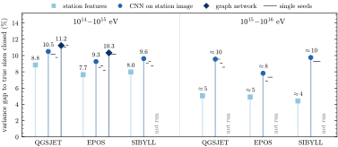
图注：不同台站信号表示在加入九特征摘要后，追回摘要与真实粒子数参考之间误差方差差距的比例，按强子模型和两个能量窗口比较。网络点为随机种子集成：CNN三种子，图网络两种子；短横线为单种子结果，部分重合。较高能窗比例四舍五入为整数，受残差标准差仅保留四位小数影响，精度约半个百分点，低能窗约0.2个百分点。图中未提供该比例自身的置信区间；“未运行”标记未执行的图网络组合。
怎么看这张图：纵轴是相对于“重构摘要到真实粒子总数参考”的方差差距追回比例，不是能量分辨率直接改善10%。各种已试编码器结果接近，但原图未给这个比例本身的区间，不能据此宣称所有网络都达到信息极限。 展示新增真实台站信息的实际增益及其有限程度，支持本文方法审计主线。
来源与置信度：arXiv HTML；source verified；https://arxiv.org/html/2611.29363v1/fig_e4_stations.svg
9. Luminosity function of millisecond pulsars in globular clusters from their gamma-ray emission
- 来源：arXiv / astro-ph.HE
- 链接：https://arxiv.org/abs/2611.30416
- 作者：Francesca Calore, Christopher Eckner, Silvia Manconi, Francesco Xotta, Gabrijela Zaharijaš
- 公告 / 来源日期：2026-11-24
- 阅读层级：相关简报
- 评分：novelty 8/10，importance 7/10，relevance 9/10，final 9.00/10
- 推荐理由：用个体MSP谱合成的前向模型与SBI直接联合推断36个星团伽马光度函数，减少外部MSP数目的规定并在可算区域核对嵌套采样，方法规模化进步明确且紧扣Fermi族群研究；所得约束与既有结果一致，普适对数正态及个体谱假设仍影响可辨识性，重要性按7分、作为相关简报候选。
中文题目：用球状星团相位分辨伽马谱推断毫秒脉冲星光度函数
问题、方法与结论：球状星团的伽马总光度同时取决于毫秒脉冲星数量和单颗亮度，两者难以分开。作者对36个星团建立共同对数正态光度函数，用神经比值估计学习模拟数据与参数的联系，并纳入NGC 6624、NGC 6626的ON/OFF相位谱，使一颗亮脉冲星与剩余群体提供不同约束。正文§5.1给出log₁₀L₀=33.4、宽度σL=1.3及68%可信区间，但结论式8改报33.3、1.2且误差不同；应保留此稿内差异，不能冒称唯一一致的精确测量。
意义与贡献：该方法无需由恒星相遇率或光学亮度预设脉冲星数，能同时推断群体光度分布和各星团伽马可见源数。模拟比较表明，单纯增加星团数不足以解除退化；有已知亮脉冲星或相位分辨信息的星团更关键。所谓仅伽马信息仍依赖星团距离和已识别对象，并非完全无外部条件。
可借鉴之处：可借鉴的是把数量作为隐变量、对小样本与显式似然比较，并用1000套模拟检验后验覆盖率。附录还比较完整能谱与积分通量：两者68%约束近似，能谱主要改善较外侧区域，因此不能把全部增益归给神经网络或谱形；相位分离才是重要新增信息。
局限与关注点：假定全部星团伽马来自共同光度函数的MSP，未检验额外辐射成分。把数量先验由对数均匀改为线性均匀后，数量可增加数倍，光度中心和宽度也改变；推断的是伽马可见群体，不能直接等同射电总数。SED层模拟使用观测误差与上限抽样，覆盖校准只验证该模拟器内一致性，不能排除模型失配。 图4实际标注33.31、1.17，接近结论而非§5.1；仍保留两处差异待作者澄清。
图4
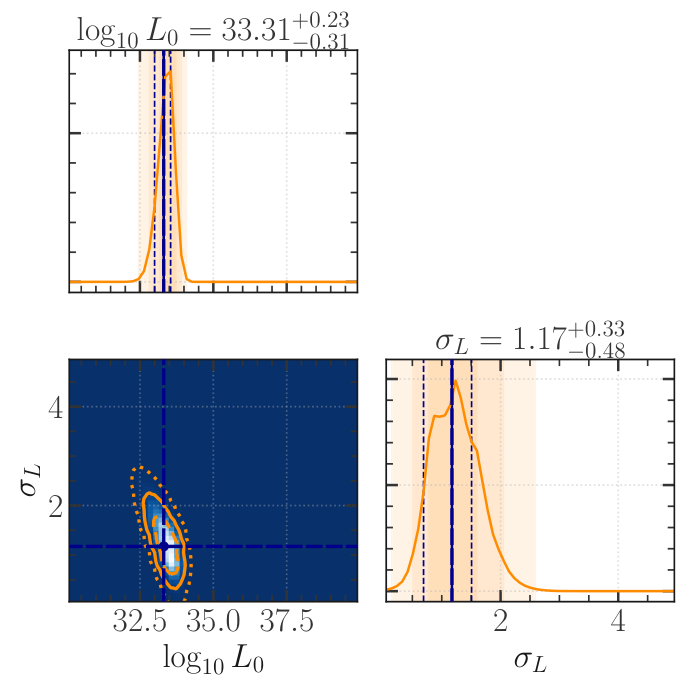
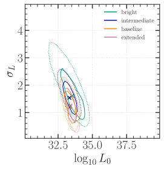
图注：左：36星团基准样本的MSP光度函数参数二维及一维后验，横纵坐标为光度中心的十进对数与对数正态宽度；蓝虚线标注图注所称中心值和一维1σ边界，橙线给不同可信区域。右：11、25、36、44星团样本依次为绿、蓝、橙、品红，实线与点线为68%、95%区域，十字标记后验中位数。
怎么看这张图：右侧基准与扩展轮廓重叠，显示加入弱源后约束趋稳；这是共同光度函数和既定先验下的条件后验。原文左图中心称均值、正文称中位数，且结论数值不同，读图不可掩盖这些标注差异。 显示样本规模对后验退化及收敛的实际影响
来源与置信度：arXiv HTML；source verified；https://arxiv.org/html/2611.30416v1/corner_2d_posterior_L0_sigmaL_baseline_dataset.png；https://arxiv.org/html/2611.30416v1/corner_2d_posterior_L0_sigmaL_dataset_evolution.svg
10. Relativistic dynamical friction and accretion for Kerr black holes
- 来源：arXiv / astro-ph.HE
- 链接：https://arxiv.org/abs/2611.31061
- 作者：Nicholas Speeney, Soumodeep Mitra, Emanuele Berti, Andrea Maselli, Sumanta Chakraborty
- 公告 / 来源日期：2026-11-24
- 阅读层级：相关简报
- 评分：novelty 7/10，importance 8/10，relevance 8/10，final 8.70/10
- 推荐理由：完整积分Kerr附近暗物质相空间的散射与俘获，展示密度相同但速度分布不同可显著改变动力摩擦，强场顺行散射贡献可反号。全文Note added承认2611.11380已有大量相同结果，因此创新由8降7、保留独立复核简报。自旋0.3726只是两个特征半径交叉的几何条件，不是普适反号阈值；反号取决于相空间与最大冲击参数。仅圆赤道轨道和无碰撞绝热Hernquist尖峰，未计算波形相位或LISA可探测性。
中文题目：Kerr黑洞附近的暗物质动力摩擦：完整速度分布可以改变力的方向
问题、方法与结论：作者把相对论动力摩擦与俘获计算推广到旋转黑洞：对绝热增长的Hernquist暗物质尖峰，在次级黑洞静止系积分散射、吸积截面及完整速度分布，只纳入束缚且不坠入中央黑洞的轨道。对圆赤道顺行轨道，远处摩擦随密度增强；强场区逆行粒子减少，超过次级运动速度的顺行粒子可使散射动量转移由阻力变为助推。示例采用百万太阳质量主黑洞与10太阳质量次级，吸积作用小约一个量级且未反号。
意义与贡献：结果说明密度相同不保证动力摩擦相同，仅靠局部密度修正Chandrasekhar公式可在峰值附近高估数倍。全文补记明确与较早的2611.11380交叉核验一致，故这是有价值的独立计算与机制比较，不能称本篇首次发现反号。
可借鉴之处：可借鉴的是先限定允许的相空间，再做局域动量传递积分。作者还在非旋转背景中加入净旋转分布，保持密度不变而改变摩擦，直接展示速度结构的重要性；但复现反号所需初始各向异性很强，属于原理演示，未证实为典型宇宙暗物质晕。
局限与关注点：自旋约0.3726对应顺行最内稳定圆轨道进入逆行边缘束缚半径以内的几何条件，并非普适反号阈值。实际反号位置依赖最大冲击参数，本文取Hill半径，也依赖初始分布。仅研究无自旋次级黑洞、圆赤道轨道，忽略介质反馈；尚未演化完整EMRI波形、计算相位差或评估LISA可探测性。
图2
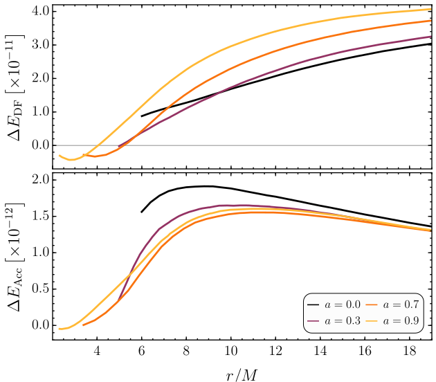
图注：不同中央黑洞自旋下，一个轨道周期内因粒子散射（上）和粒子动量吸积（下）引起的轨道能量变化。暗物质晕总质量为10的12次方太阳质量，尺度半径20 kpc，主黑洞与次级质量分别为10的6次方和10太阳质量。轨道为圆形、赤道、顺行，各曲线在相应顺行最内稳定圆轨道处终止；横坐标半径以主黑洞质量对应的几何长度归一化。
怎么看这张图：沿各自旋曲线向最内稳定圆轨道移动，重点区分上面散射作用的减弱/符号变化和下面吸积作用。符号变化是局部环境对轨道能量的贡献，并未证明足以抵消引力波辐射或产生向外迁移。 直接支持散射摩擦反号，并保留吸积不反号的对照。
来源与置信度：arXiv HTML；source verified；https://arxiv.org/html/2611.31061v1/DF_acc_energy_loss.svg
11. Modeling extraordinary relativistic jets on the scale of the cosmic web
- 来源：arXiv / astro-ph.HE
- 链接：https://arxiv.org/abs/2611.28376
- 作者：Gourab Giri, Marco Tavani, Dario Borgogno, Andrea Botteon, Rossella Cassano, Valerio Vittorini, Claudio Gheller, Gianfranco Brunetti
- 公告 / 来源日期：2026-11-24
- 阅读层级：相关简报
- 评分：novelty 8/10，importance 7/10，relevance 8/10，final 8.65/10
- 推荐理由：三维相对论MHD把Porphyrion类巨型喷流推进到约9 Mpc/20 Myr，并比较低密度群环境与稠密介质，模型尺度和环境检验具有明显新意；仍是特定功率和介质条件下的可行性演示，摘要未展示环境唯一性、数值收敛或可观测量的充分拟合，重要性按有用机制约束计7，不因喷流尺度纪录升为突破。
中文题目：低密度环境中的强喷流可快速长到宇宙网尺度
问题、方法与结论：作者用三维相对论磁流体模拟检验Porphyrion类巨型射电源能否由连续喷流形成。三组计算固定注入洛伦兹因子12、磁化度0.1及名义功率3.5×10^46 erg/s，改变环境。最稀薄的一组从星系群中心外600 kpc注入，19.6 Myr后单侧长约4.25 Mpc，平均头部推进速度约0.72c；对称外推的双侧尺度约8.5 Mpc，文中概称9 Mpc。相同喷流从两个较密星系团中心出发，26.1及76.6 Myr后分别只到单侧1.7和1.9 Mpc。模型同时生成144 MHz合成图，出现再准直区与终端亮结。
意义与贡献：结果说明极大尺度不必意味着极长年龄：低外界惯性负载允许喷流维持较快头部推进，并将能量输送到群外稀薄介质。它是物理可行性演示，不能据此把Porphyrion实际年龄确定为20 Myr，也没有测出射电源尺寸的绝对上限。
可借鉴之处：固定喷流而比较三类环境，有助于分开供能与传播阻力；结合洛伦兹因子、侧向速度波动及合成辐射，可以检查减速、失去准直和亮结的关系。这里的快速推进指喷流头部，不能和局部流体洛伦兹因子混为一谈。
局限与关注点：每个喷流半径仅5个网格，且只考察三组环境；高洛伦兹因子处横向扰动较弱不等于已完成所有不稳定模的收敛检验。电子谱固定、非热能量比例取0.5，未追踪加速和辐射老化，所以射电形态相似不能排除重启喷流。实际环境含团块、湍流和供能变化，均可能改变增长速度。
图2
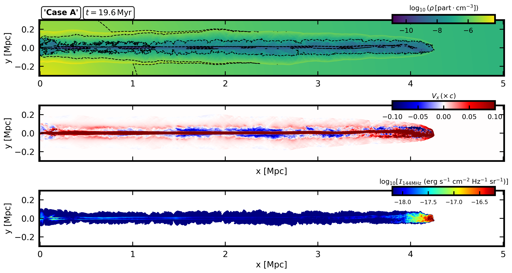
图注：低密度星系群及群外环境中的A组喷流，名义功率3.5×10^46 erg/s，在19.6 Myr达到单侧约4.25 Mpc。上图是密度切片，轮廓对应logρ=-9、-7、-5.5；中图是x方向速度切片，红色向前、蓝色回流，色标截断以突出结构；下图是沿视线积分的144 MHz同步辐射强度，展示基部和终端增强。
怎么看这张图：先看整个单侧长度，再将中图头部回流与下图终端亮区对应。图像展示特定低密度模型的可行性，未直接测量真实源年龄；射电图采用固定非热电子谱，亮结不唯一指向连续或重启供能。 直接展示极端增长尺度、动力学与合成辐射的对应。
来源与置信度：arXiv HTML；source verified；https://arxiv.org/html/2611.28376v1/8Mpc_Collage.png
图5
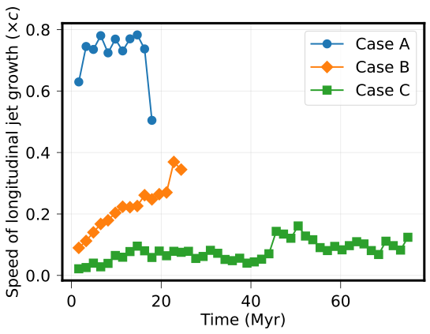
图注：三组模拟射电结构沿喷流轴的膨胀速度随演化的比较。低密度A组更容易持续快速增长；喷流逐渐失去准直并出现磁流体扰动后，推进速度趋于平坦或下降。
怎么看这张图：比较相同注入条件下的头部增长速度，区分它与喷流内部流速。三例还改变注入位置和环境尺度，不能解释为单参数密度因果实验或完整族群分布。 支持环境控制传播速率的主要比较。
来源与置信度：arXiv HTML；source verified；https://arxiv.org/html/2611.28376v1/Jet_advance_Speed.svg
说明
评分由 LLM 给出初评，再由本地阈值策略过滤；IACT、TeV 伽马射线和高能中微子天文学按重点方向处理。